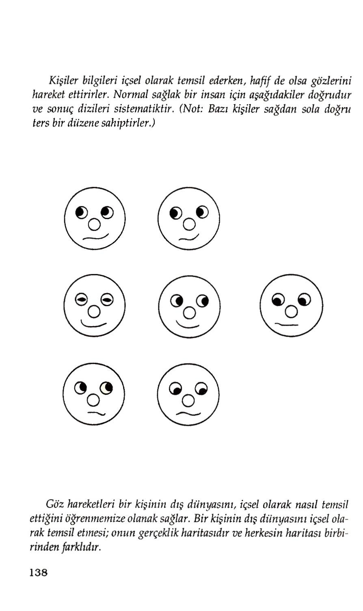
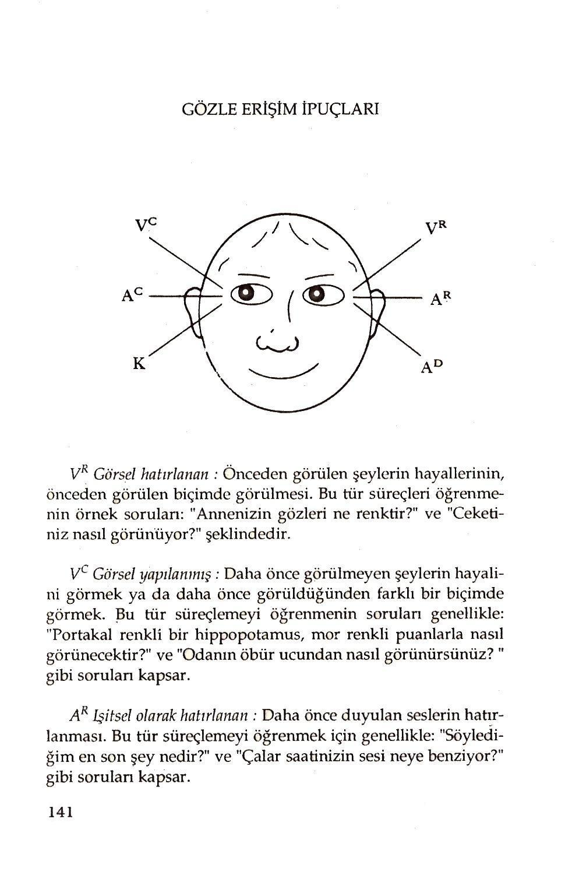

'Hata değil,çare bulun."
— Henry Ford
BU BÖLÜM, çarelerin bulunmasıyla ilgilidir. Şimdiye kadar yaşamınızı değiştirmek için neleri değiştirmeniz gerektiğinden, hangi durumların sizi güçlendireceğinden, ne tür durumların sizi güçsüz kılacağından söz ettik. Bu bölümde, istediğiniz zaman istediğinizi üretebilmeniz için durumlarınızı nasıl değiştireceğinizi öğreneceksiniz. İnsanlar genellikle yeterli kaynağa sahiptirler, fakat onları kontrol edemezler. Nasıl kontrollü olacağınızı, yaşaından nasıl daha çok tat alacağınızı, durumlarınızı ve eylemlerinizi nasıl kontrol edebileceğinizi, nasıl değiştirebileceğinizi ve bu sonuçları vücudunuzda nasıl üreteceğinizi bu bölümde açıklayacağız. Tüm bunlar çok kısa bir sürede gerçekleştirilebilir.
88
Size değişimi öğreteceğim model ve SDP'nin öğretim yöntemi terapi okullarının bir çoğunda kullanılanlardan çok farklıdır.Bir dizi okulun uyguladığı terapi yöntemleri birbirine o kadar çok benzer ki, artık bu yöntemler kültürel bir totem olmuştur.Bir çok terapici, değişim için içinize yerleşmiş negatif deneyimlere geri dönerek, bunları tekrarlamak zorunda olduğunuzu söyler. Bu fikir de negatif deneyime sahip kişilerin bu deneyimlerini ancak koyacak yer kalmayıncaya kadar içlerinde bir sıvı gibi tutmaları sonucu dışan taşırılarak veya yakılarak atılabileceği inanışından gelmektedir. Terapiciler bu nedenle, söz konusu süreçle temas edebilmenin tek yolunun, olayların deneyimini tekrarlamak ve tüm acıları tekrar duymak ve hepsini bir anda dışarıya atmak olduğunu söylerler.
Tüm deneyimlerim, bu yöntemin insanlara yardım etmek için en etkisiz yollardan biri olduğunu göstermektedir. Öncelikle insanlardan korkunç bir rahatsızlığı tekrar denemelerini istemek, onları olabilecekleri en acılı ve en beceriksiz duruma sokmak demektir. Birilerini beceriksiz duruma soktuğunuzda, onların yeni becerikli davranışlar ve sonuçlar üretme olasılıklarını büyük oranda azaltıyorsunuz demektir. Gerçekte bu yaklaşım, acılı ve beceriksiz paterni daha da güçlendirebilir. Sürekli olarak sınırlama ve acı sinirsel durumuna ulaşılırsa, gelecekte bu durumları tetiklemek çok daha kolay hale gelecektir. Bir deneyimi tekrar canlandırdıkça, onu tekrar kullanma olasılığınız artar. Bu da niçin geleneksel terapicilerin çok uzun sürede sonuç alabildiklerini açıklar.
İyi arkadaş olduğum terapiciler var. Onlar, hastalarıyla içtenlikle ilgilenmektedir.
Bir fark yarattıklarına inanıyorlar. Doğrudur. Geleneksel terapi sonuçlar üretmektedir. Bununla birlikte buradaki sorun, bu sonuçların hem hastaya daha az acı vererek, hem de daha kısa sürede elde edilip edilemeyeceğidir? Bandler ve Grinder'in yaptığı gibi, dünyadaki en etkili terapicilerin eylemlerini modellersek; bu sorunun cevabı evettir. Gerçekten de beyninizin nasıl çalıştığını anlamada ustalaşırsanız,
89
kendi kendinizin terapicisi ve danışmanı olabilirsiniz. Hatta çok kısa bir süre içinde davranışlarınızı, duygularınızı, hislerinizi değiştirme yeteneği kazanarak; terapinin de ötesine geçebilirsiniz.
Etkili sonuçlar üretmede değişim sürecinin, yeni bir model yaratmakla başlayacağına inanıyorum. Problemlerinizin taşıncaya kadar içinizde birikeceğine inanıyorsanız, deneyeceğiniz şey de aynen öyle olacaktır. Sinir sistemimiz bana göre bir müzik kutusuna benzer. Öldürücü bir sıvı gibi içimizde acı biriktirmek yerine, sistemin bu özelliğinden yararlanmamız gerekir. İnsan önceden kaydedilmiş deneyimleri tekrarlamaya devam ederse gerçekten ne olur? Biz onları, müzik kutusundaki plaklar gibi beynimizde biriktiririz. Yine onlar gibi beynimizdeki kayıtlar da çevremizdeki uygun uyarıcılar tetiklendiğinde, doğru düğmeye basıldığında herhangi bir anda tekrar çalınabi- lir.
Bu nedenle biz, mutlu ve neşeli deneyimlerimizi hatırlayabilir ya da bunları ifade eden şarkıları çalacak düğmeye basabiliriz. Terapik planınızda tekrar acı getirecek düğmeye basmak varsa; değiştirmeyi istediğiniz negatif durumu güçlendiriyor olabilirsiniz.
Buradaki önemli nokta çalınmayan plakların ortaya çıkmayacağıdır. Bu, anlamsız bir şeydir. Beceriksiz his ve duygularınızı yaratan yolları değiştirmek, müzik kutusunu tekrar programlamak kadar kolaydır. Durumunuzu değiştirmek için acılarınızı tekrar denemek zorunda değilsiniz. Yapmak zorunda olduğunuz şey, iç temsilinizi negatiften pozitife değiştirmektir. Pozitif iç temsil de otomatik olarak tetiklenir ve daha etkin sonuçlar üretmenize neden olur. Coşkunluk akımını hızlandırmak ve devredeki acı akımını kesmek zorundasınız.
SDP insan deneyiminin kapsamına değil, yapısına bakar. Kişisel açıdan neşeli ve sempatik olabiliyorsanız, neler olduğu üzerinde durmayın. Daha çok zihniniz ve nasıl bir sonuç oluşturduğunuz üzerinde durunuz. Çöküntü ve coşku durumlarını-
90
zın üretiminde ne gibi farklılıklar vardır? Buradaki ana fark, iç temsillerinizi yapılandırma şeklindedir.
"Bilinçli düşünceden geçirmediğim bir şey beni etkilemez."
— Anthony Robbins İç temsillerimizi beş duyumuzla yapılandırırız. Bunlar da; görme, işitme, dokunma, tatma, koklamadır. Diğer bir anlatımla deneyimimiz görsel, işitsel, dokunsal, tatsal ve kokusaldır.Bu nedenle zihnimizde hangi deneyimleri biriktirirsek biriktirelim; onlar, bu duyular aracılığıyla, özellikle üç alt biçem olan görsel, işitsel ve dokunsal mesajlar aracılığıyla temsil edilirler.
İç temsilleri oluştururken bu biçemlerden çok fazla sayıda gruplar oluşturulabilir. Beş duyunuzu ya da temsil sisteminizi, deneyim ya da sonuçlarınızı
oluştururken
kullandığınız
karışım
maddeleri
olarak
düşünebilirsiniz. Herhangi bir kimse özel bir sonucu üretebiliyorsa; bu sonuç belirli fiziksel ve zihinsel eylemlerle yaratılır. Aynı eylemleri tam olarak taklit edebilirseniz, bu kişinin ürettiği sonuçları üretebilirsiniz. Bir sonuç üretebilmek için hangi karışımların gerekli olduğunu bilmelisiniz, Tüm deneyimlerimiz beş
duyumuzdan ya da biçemlerden türetilir. Bununla birlikte, sadece hangi karışımların gerekli olduğunu bilmek yeterli değildir. Tam istediğiniz sonucu üretebilmek için kesin olarak hangi karışıından ne kadar gerekli olduğunu bilmek zorundasınız. Herhangi bir karışıından daha az ya da daha fazla koyarsanız; istediğiniz sonucu tür ve kalite olarak elde edemezsiniz.
İnsanlar bazı şeyleri değiştirmek istediğinde; genellikle bir ya da iki şeyi birlikte değiştirmeyi düşünüyorlar. Hislerini, yani durumlarını veya davranışlarını; ya da hem hislerini, hem de davranışlarını birlikte değiştirmek istiyorlar. Örneğin bir sigara tiryakisi fiziksel ve duygusal hislerini (durum) ve aynı zaman 91
da sigara üstüne sigara yakan davranış paternini değiştirmek istiyor. Durumun gücü bölümünde, davranış ve durumları değiştirmenin iki yolu olduğunu açıklamıştık. Ya his ve davranışlarınızı değiştiren fizyolojinizi ya da iç temsillerinizi değiştireceksiniz. Bu bölümde özellikle nesneleri temsil şeklinizi nasıl değiştirebileceğinizi öğreneceksiniz. Bu da, amaçlarımıza ulaşmada bizi destekleyecek davranışları üretme ve hissetme gücü verecektir.
İç temsilimizle ilgili olarak değiştirebileceğimiz iki şey vardır. Temsil ettiğimiz şeyi değiştirebiliriz. Örneğin en kötü senaryoyu hayal ediyorsak; olası en iyi senaryoyu görüntüleyerek değişiklik yapabiliriz. Ya da bazı şeyleri temsil şeklimizi değiştirebiliriz. Birçoğumuzun zihninde beyni özel bir şekilde cevap vermeye tetikleyecek belirli anahtarlar vardır. Örneğin bazıları için bir şeyi görüntülemek çok büyük bir güdüleyicidir. Diğer bazıları da bir şey hakkında kendi kendilerine konuşurlarken kullandıkları sesin tonunun güdülemelerinde farklılık yaptığını kabul ederler. Hemen hepimiz kendi içimizde ani cevapları tetikleyen anahtar alt biçemlere sahibizdir. Nesneleri temsil etmenin inceliklerini ve onların bizi etkileme şekillerini bir kere keşfettiğimizde; zihnimize sorumluluk vermeye ve nesneleri bizi zayıflatacak şekilde değil, güçlendirecek şekilde temsil etmeye başlanz.
Birileri bizim modellemek istediğimiz bir sonucu üretirse; biz onun zihninde neler görüntülediği ve kendi kendisine neler söylediği gerçeğinden daha çok şey bilmeliyiz. Zihinde neler olup bittiğine gerçekten ulaşabilmek için daha keskin araçlara ihtiyacımız var. İşte burada alt biçemler devreye girer. Onlar bir sonucu yaratmak için gerekli olan karışımların kesin miktarlarına benzerler. Altbiçemler, insan deneyiminin yapısını oluşturan en küçük ve en kesin yapım bloklarıdır.
Görsel bir deneyimi anlayabilmek ve kontrol edebilmek için onun hakkında daha çok şey bilmeliyiz. Parlak mı, koyu mu; renkli ya da siyah beyaz mı; hareketli mi ya da durağan mı olduğunu bilmeliyiz. Benzer şe-92
kilde işitsel iletişimin de yüksek ya da sakin mi; yakın ya da uzakmı ya da ince mi olduğunu bilmek isteriz.Dokunsal bir deneyimin yumuşak ya da sert mi; keskin ya da düzgünmü yada katı mı olduğunu öğrenmeliyiz. Aşağıda alt biçemlerin bir listesi verilmiştir.
OLASI ALT BİÇEMLERİN KONTROL LİSTESİ
GÖRSEL:
1.Film ya da durağan çerçeveler
2.Geniş görüş ya da çerçeveli (çerçevelendirilmişse; çerçevenin şekli) 3.Renkli ya da siyah-beyaz
4.Parlaklık
5.Görüntünün büyüklüğü (yaşam ölçüsü, büyük ya da küçük)
6.Nesnelerin merkezsel ölçüsü
7. Görüntü içinde ya da dışında yer almak
8.Kendisiyle görüntü arasındaki mesafe
9.Merkezi nesnenin kişiyle olan mesafesi
10.3Boyut kalitesi
11.Rengin yoğunluğu (ya da siyah beyazın)
12.Zıtlığın derecesi
13.Hareket (hızlı ya da yavaş tempoda)
14.Odak (Hangi parçalar içeride ya da dışarıda)
15.Kesinlik ya da sürekli odak
16.Görünme açısı
17.Görüntü sayısı (Kaymalar)
18.Yerleşim
19.Diğer?
İŞİTSEL:
1.Şiddeti
2.Ahenk (kesilmeler, gruplaşmalar)
93
3.Ritm (düzenli, düzensiz)
4.Bükülmeler (işaretli kelimeler, nasıl)
5.Tempo
6.Duraklamalar
7.Tonalite
8.Sesin rengi (kalite, nereden yankılanıyor)
9.Sesin tekliği (Düzlük vb.)
10.Etrafta dolaşan ses- uzaysal
11.Yerleşim
12.Diğer
DOKUNSAL:
1.Sıcaklık
2.Düzgünlük
3.Titreşim
4.Basınç
5.Hareket
6.Dayanma süresi
7.Kararlılık- Kesiklik
8.Kuvvetlendirme
9.Ağırlık
10.Yoğunluk
11.Yerleşim
12.Diğer
ACI İÇIN:
1.Sızlama
2.Sıcak - soğuk
3.Kas gerilimi
4.Keskin, kör
5.Basınç
6.Dayanma süresi
7.Kesiklik (nabız atışı gibi)
8.Yerleşim
9.Diğer
94
Bir diğer önemli ayırım da hayalin ilgili ya da ilgisiz olmasıdır.İlgili bir hayal,gerçekten oradaymışsınız gibi olan deneyiminizdir. Gerçekten o zaman ve yerde tüm benliğinizi siz varmışsınız gibi görür, işitir ve hissedersiniz. İlgisiz bir hayal ise; sizin dışınızda olan bir şeyi seyrediyormuş gibi oluşturduğunuz bir deneyimdir. İlgisiz bir hayalinizi görürseniz; o kendi kendinizi filmde seyretmeye benzer.
Son zamanlarda sahip olduğunuz hoş bir deneyiminizi hatırlamak için bir dakikanızı ayırın. O deneyimin içine gerçekten girin. Gözlerinizle; olaylar, hayaller, renkler, parlaklıklar vb. şeyleri görün. İnsan sesini, diğer sesleri vb.
işitin. Duyguları, sıcaklığı vb. hissedin. Deneyim buna benzer. Şimdi de vücudunuzdan ayrılın ve bulunduğunuz koşullardan hislerinizi uzaklaştırın ve deneyimi yaptığınız yerde kendinizi hâlâ görebilecek bir yere yerleşin. Kendinizi sinemada deneyiminizi seyrediyoruş gibi hayal edin. Hislerinizdeki fark nedir?
Duygularınız biricisinde mi ikincisinde mi daha yoğundu? Bunlar arasındaki farklar, ilgili ve ilgisiz deneyimler arasındaki farklardır.
İlgili, ilgisiz gibi alt biçem ayrımlarını kullanarak, yaşam deneyiminizi kökünden değiştirebilirsiniz. Unutmayın; davranışlarınız içinde bulunduğunuz durumun sonucudur ve bu davranışlarınız nesneleri görüntülemeniz, kendi kendinize söylemeniz vb. şeylerden oluşan iç temsiliniz tarafından yaratılır. Film yönetmeni filmin izleyiciler üzerindeki etkisini nasıl değiştirebiliyorsa; siz de herhangi bir deneyimin yaşamınız üzerindeki etkisini değiştirebilirsiniz.
Yönetmen seyircileri istediği duruma sokabilmek için kamera açısını, müziğin tipini ve sesinin şiddetini, hareketlerin miktar ve hızını, hayalin kalitesini ve rengini değiştirebilir. En üst düzeydeki amaçlarınızı ve ihtiyaçlarınızı destekleyecek davranış ya da durumu yaratmak için, siz de beyninizi aynı şekilde yönetebilirsiniz.
Bunun nasıl başarılacağını göstereyim. Aşağıdaki alıştırmaları yapmanız son derecede önemlidir. Bu nedenle bir alıştırmayı okuduğunuzda durup alıştırmayı yaptıktan sonra diğer alış
95
tırmayı okumaya başlamalısınız. Bu alıştırmaları bir başka kişiyle birlikte yapmak eğlenceli olabilir. Sırayla ipuçlarını vererek onlara cevap verin.
Çok hoş bir anınızı düşünmenizi istiyorum. Yakın ya da uzak geçmişteki bir anınız olabilir. Sadece gözlerinizi kapayın, gevşeyin ve onu düşünün. Hayalinizi düşünün ve onu parlak ve daha parlak hale getirin. Hayaliniz parlaklaştıkca durumunuzun nasıl değiştiğine dikkat edin. Bundan sonra sizden istediğim zihinsel görüntüyü kendinize yaklaştırmanızda. Şimdi durun ve onu büyütün.
Hayalinizde bu işlemleri yapınca, ne oldu? Deneyimin yoğunluğu değişmedi mi?
İnsanların büyük çoğunluğu için hoş bir anıyı daha parlak, daha yakın ve daha büyük yapmak, çok daha güçlü bir hayal ve çok daha hoş bir durum yaratır. O iç temsilin neşesini ve gücünü artıracaktır. Sizi çok daha güçlü ve çok daha neşeli bir duruma sokacaktır.
Herkes görsel, işitsel, dokunsal altbiçemlerine ya da temsil sistemlerine ulaşır.
Fakat farklı temsil sistemlerine farklı derecelerde bağlanırlar. Birçok kimse beynine daha çok görsel çerçeveyle ulaşır. Onlar kafalarındaki görüntülere tepki gösterirler. Bazıları işitsel, bazıları da dokunsal olarak ulaşırlar. Bunlar da işittikleri ya da hissettiklerine daha kuvvetli tepki gösterirler. Bu nedenle görsel çerçevelerinizi değiştirdikten sonra, aynı şeyi diğer temsil sistemleriyle yapmaya çalışın.
Şimdiye kadar üzerinde çalıştığınız, neşeli anınızı geri getirin. İşittiğiniz seslerin şiddetini yükseltin. Ona daha çok ritm, daha çok baslık verin ve rengini değiştirin. Onları daha kuvvetli ve olumlu yapın. Şimdi de aynı şeyi dokunsal alt biçemlerle gerçekleştirin. Belleğinizi daha öncekinden daha ılık, daha yumuşak ve daha düzgün yapın. Şimdi deneyiminiz hakkındaki hislerinize ne oldu?
Tüm insanların cevaplan aynı şekilde olmaz. Özellikle dokunsal ipuçları, değişik insanlarda değişik cevaplar açığa çıkarır. Muhtemelen çoğunuz onun hayalini daha büyük ve daha parlak hale getirmişsinizdir. O; sizin iç temsilinizi daha yoğun,
96
daha cazip ve en önemlisi daha olumlu, daha becerikli bir duruma sokmuştur. Danışma oturumlarında bu alıştırmaları yaptığıında kişinin sadece fizyolojisine bakarak zihninde neler olduğunu tam olarak görebiliyorum. Derin nefes almaya başlar, ,omuzları düzleşir, yüzü gevşer ve tüm vücudu daha hazır hale gelmiş gibi görünür.
Aynı şeyi negatif hayalle yapalım. Sizi alt üst eden ve acı duymamıza neden olan bir şeyi düşünmenizi istiyorum. Şimdi o hayali alın ve daha parlak hale getirin.
Kendinize yaklaştırın ve büyütün. Beyninizde neler oluyor? Daha önce hissettiği kötü hisler, öncekilerden çok daha güçlü bir hale gelmektedir. Şimdi hayali daha önce bulunduğu yere koyun. Onu daha küçük daha donuk yapar ve daha uzağa koyarsanız ne olur? Deneyin ve hislerinizdeki farka dikkat edin. Negatif İlişlerinizin gücünü kaybettiğini göreceksiniz.
Benzer şeyi diğer biçemlerle deneyiniz. İç sesinizi dinleyin ya da yüksek, kesik kesik tonda deneyiminize neler olduğuna bakın. Deneyiminizi tam ve kesin olarak hissedin. Büyük bir olasılıkla benzer şekilde negatif hisler yoğunlaşacaktır. Tekrar ediyorum; bunları akademik bir şekilde anlamanızı istemiyorum. Bu alıştırmaları sizi hangi biçem ve altbiçemlerin daha çok güçlendirdiğine dikkat ederek, yoğun ve kendinizi vererek yapmanızı istiyorum.
Hayaldeki değişikliklerin hislerinizi nasıl değiştirdiğine dikkat ederek bu adımları zihninizde tekrar uygulamalısınız.
Az önceki negatif hayalinizi şimdi küçültün. Hayal büzüldükçe neler olduğuna dikkat edin. Onu bulanıklaştırarak, donuklaştırarak ve görülmesi çok zor bir yere atarak üzerindeki dikkatinizi dağıtın. Şimdi onu kendinizden iyice uzaklaştırın.
Sonuç olarak, hayali bir daha göremeyeceğiniz bir şekilde güneşe gönderin. Onu dünyadan uzaklaştırdıktan sonra; ne işittiğinize, ne gördüğünüze ve ne hissettiğinize dikkat edin.
Aynı şeyleri işitsel biçem için yapın. İşittiğiniz sesin şiddetini azaltın. Onu daha uyuşuk bir hale getirin. Ritmini ve sıkıntısını yok edin.
Sınırsız Güç - 7
97
Şimdi bunları dokunsal algılamalarınız için uygulayın. Hayalinizi bir tutam haline getirin, zayıflatın ve yumuşatın. Bu süreçten sonra negatif hayalinize ne oldu?
Çoğunluğa benziyorsanız; hayal gücünü kaybeder, daha az acı verir hatta yok olur.Geçmişte size büyük acı veren herhangi bir şeyi alıp; zayıflatabilir, çözebilir ve bütünüyle yok edebilirsiniz.
Sanırım bu kısa deneyim size bu tekniğin ne kadar güçlü olabileceğini göstermiştir. Sadece birkaç dakika içinde olumlu bir hissinizi daha kuvvetli ve güçlü bir hale getirebilirsiniz. Aynı şekilde güçlü negatif hayallerinizi ele alıp, onların üzerinizdeki etkisini yok edebilirsiniz. Geçmişte iç temsilinizin sonuçla-rıyla yetiniyordunuz. Şimdi işlerin bu şekilde olmasının zorunlu olmadığını biliyorsunuz.
Temel olarak yaşamınızı iki şekilde sürdürebilirsiniz. Beyninizin geçmişte olduğu gibi çalışmasına karşı çıkmayıp herhangi bir görüntü, ses ya da hissin içinizde oluşmasına izin verir ve bir Pavlov köpeğinin zile gösterdiği tepki gibi, ipuçlarına otomatik olarak tepki gösterebilirsiniz. Diğer yönden beyninizi bilinçli olarak çalıştırmayı seçebilirsiniz. İstediğiniz ipuçlarını kendiniz oluşturabilirsiniz. Kötü hayal ve deneyimleri alıp onların dayanıklılığını ve gücünü yok edebilirsiniz.
Onları, üzerinizde herhangi bir etkisi olmayacak şekilde temsil edebilir ve istediğiniz şekilde işlem yapabilecek boyuta indirebilirsiniz.
Yapamayacağınız kadar büyük olduğunu düşündüğünüz iş ya da görev deneyiminiz olmuştur. Sadece bu nedenle işi yapmaya niyet bile etmemişsinizdir. Bu görevi küçük bir resim olarak görüntülerseniz; onu başaracağınızı hisseder ve pes etmek yerine uygun eylemlerde bulunmaya başlarsınız. Bunun size çok aşırı bir basitleştirme olarak göründüğünü biliyorum; fakat söylediklerimi yapmaya çalıştığınızda temsilinizin değiştiğini, görev hakkındaki hissinizi ve eylemlerinizi değiştirdiğinizi göreceksiniz.
Şüphesiz şimdi iyi deneyimleri öne çıkarıp onları genişletebileceğiniz!
biliyorsunuz. Yaşamın eğlenceli küçük bir kısmını
98
alarak büyütebilir, günün görünüşünü parlaklaştırabilir ve daha mutlu daha hafif hissedebilirsiniz. Şimdi daha anlamlı, daha renkli yaşamın nasıl yaratılacağının yolunu biliyoruz.
"İyi ya da kötü bir şey yoktur, fakat biz düşüncemizde iyi ve kötüyü yaratıyoruz. "
William Shakespeare
Hatırlarsanız birinci bölümde kralların gücünden söz etmiştik. Kral, krallığını yönetme yeteneğine sahipti. Sizin krallığınız da beyninizdir. Kral, kendi krallığını nasıl yönetiyorsa; yaşam deneyimlerinizi nasıl temsil ettiğinizi kontrol etmeye başlarsanız, siz de kendi krallığınızı yönetebilirsiniz. Şimdiye kadar ilgilendiğiniz tüm alt biçemler beyne nasıl hissedeceğini söyler. Hayatın gerçekte nasıl olduğunu bilmediğimizi unutmayın. Biz sadece hayatı kendi kendimize nasıl temsil ettiğimizi biliyoruz.Bu nedenle büyük, parlak, güçlü, tok bir negatif hayal sunulursa; beyin de bize büyük ve güçlü bir deneyim verir. Fakat negatif hayali alır, büzer, karartır, küçük bir çerçeveye alır ve gücünü yok edersek; beyin de ona göre cevap verecektir. Negatif durumu içimize yerleştirmek yerine; ona aldırmayabilir ya da onunla bize çok zarar vermeyecek şekilde ilgilenebiliriz.
Dilimiz bize güçlü temsillerden birçok örnek sunar. Birisinin parlak bir geleceği var dediğimiz zaman ne demek istiyoruz? Birisi geleceğin karanlık göründüğünü söylediği zaman neler hissediyorsunuz? Konuya ışık tutalım derken neyi kastediyorsunuz? Ölçüsüz üfürüyor ya da kötü hayalleri var derken, ne söylemek istiyorsunuz? Onun zihninde bazı şeyler ağır çeker derken ne söylemek istiyorsunuz?
Bu deyimleri sadece bir mecaz olarak kabul etmek eğilimindeyizdir. Oysa, onlar mecaz değildir ve genellikle oldukça kesin bir biçimde, zihnimizin içinde neler olduğunu tanımlarlar. Hoş olmayan bir anınızı alıp, büyüttüğünüz bir kaç dakika ön
99
cesine dönelim. Deneyimin negatif yönlerini nasıl vurguladığınızı ve negatif duruma nasıl girdiğinizi hatırlayın. Bu deneyimi, ölçüsüz üfürmek deyiminden daha iyi tanımlayacak bir yol biliyor musunuz? Bu nedenle, iç güdüsel olarak zihindeki hayallerin ne kadar güçlü olduğunu biliyoruz. Beyninizi kontrol edebileceğinizi unutmayın; yoksa o sizi kontrol etmek zorunda kalır.
İşte birçok kimseye yardımcı olabilecek basit bir alıştırma. Sürekli kendi kendinizle konuşmanızın sizi bezdirdiği oldu mu? Beyninizin hiç susmadığı bir pozisyon oldu mu? Birçok zaman beynimiz diyalog üstüne diyalog yapar.
Zamanın çoğunda beynimiz diyalogları tekrarlar durur. Sorunları kendimizle tartışır veya eski tartışmaları kazanmaya ya da eski derecelerimizi düzeltmeye çalışırız. Tüm bunlar sizde oluyorsa, sadece sesini kısmanız yeter. Kafanızda sesi daha yumuşak, daha zayıf yapın ve daha uzağa götürün. Bu, birçok kimsenin sorununu çözer. Ya da bu iç diyaloglardan birisi sizi sürekli olarak sınırlıyor mu?
"Onu yapamazsın", sözünü sadece daha seksi, daha cilveli ton ve tempoda işitin. Şimdi nasıl hissediyorsunuz? Bu sesin "yapma" dediği konuda, kendinizi daha çok güdülenmiş hissedebilirsiniz. Bunu hemen yapın ve farkı deneyin.
Şimdi de diğer alıştırmayı yapalım. Bu kez sizi bütünüyle bir şey yapmaya güdüleyecek bir deneyiminizi düşünün. Gevşeyin ve o deneyimin zihinsel resmini mümkün olduğu kadar açık hale getirin. Şimdi size onun hakkında bazı sorular soracağım. Durun ve her soruyu birer birer cevaplandırın. Doğru ya da yanlış cevap yoktur. Farklı kişiler, farklı cevaplar vereceklerdir.
Hayale baktıkça bir film mi yoksa bir fotoğraf mı görüyorsunuz? O, siyah-beyaz mı yoksa renkli mi? Yakın mı uzak mı? Solda, sağda ya da ortada mı? Görüş
alanınızın üstünde, altında ya da ortasında mı ? İlgili mi? Kendi gözlerinizle görüyormuş gibi misiniz ya da ilgisiz mi. Dışardan bakan biri gibi misiniz? Onu sınırlandıran bir çerçeve var mı ya da sonsuza uzanan
100
Bir manzaramı görüyorsunuz? Parlak, bulanık, karanlık ya da aydınlık mı? Belirli bir yere mi yönelik yoksa dağınık mı? Bu alıştırmayı yaparken, hangi alt biçemlerin güçlü olduğuna ve üzerinde yoğunlaştığınızda en güçlülerinin hangileri olduğuna emin olacak kadar dikkat edin.
Şimdide de işitsel ve dokunsal altbiçemlerinizle çalışın. Olup biteni işittiğinizde; kendi sesinizi mi işitirsiniz yoksa diğerlerinin sesini mi ? Karşılıklı konuşmayı mı yoksa sadece bir kişinin konuşmasını mı işitirsiniz? İşittiğiniz sesler yüksek mi, yoksa yavaşmıdır? Onlar değişken mi yoksa tekdüze mi? Ritmik yada kesik kesik midirler? Tempo hızlı mı düşük mü? Sesler gelip gidiyor mu yoksa sürekli mi?
İşittiğiniz ya da kendi kendinize söylediğiniz ana şey nedir? Ses nereden gelmektedir? Onu yumuşak mı yoksa sert mi hissediyorsunuz? Ilık ya da serinmidir? Dalgalı ya da düzgün müdür? Esnek ya da sert midir? Sıvı ya da katı mıdır? Keskin ya da kör müdür? Vücudunuzun neresinde hissediyorsunuz? Ekşi ya da tatlı mıdır?
Bu sorulardan bazılarına ilk başta cevap vermek zor gibi görünebilir. İç temsillerinizi daha çok dokunsal olarak şekillendirme eğilimindeyseniz; bu görüntüleri oluşturamayacağınızı düşünebilirsiniz. Unutmayın bu bir inançtır ve siz bu inanca sahip oldukça; o da gerçek olacaktır. Biçemlerinizin daha çok farkına vardıkça, bindirme dediğimiz bir şeyle algılamalarınızı geliştirmesini öğreneceksiniz. Bu da örneğin, siz işitsel yöne ağırlık veriyorsanız; bir şeyi kavramada ve deneyimde, işitsel ipuçlarına bakarak en iyi sonucu alabilirsiniz demektir. Bu nedenle, o anda öncelikle ne işittiğinizi hatırlayabilirsiniz. Siz bir kez o durumda ve zengin, güçlü bir iç temsile sahipseniz; görsel altbiçemlerle çalışmak için görsel çerçeveye ulaşmak ya da dokunsal altbiçemleri denemek için dokunsal çerçeveye ulaşmak çok daha kolay olacaktır.
Evet, yapmak için önceden çok güdülendiğiniz bazı şeyleri gördünüz ve denediniz; şimdi de şu anda hakkında hiçbir özel hisse ve yapmak için hiçbir güdülemeye sahip olmadığınız, fa
101
kat yapmak için çok güdülenmek isteyebileceğiniz bir şey düşünmenizi istiyorum. Bir kez daha zihinsel bir hayal oluşturun. Şimdi aynı soruyla çalışmaya başlayın ve daha önceden kuvvetli bir şekilde güdülenmiş olduğunuz şeye verdiğiniz cevaplarla şimdiki cevap verme şekliniz arasındaki farkları dikkatle kaydedin. Örneğin, hayale baktığınızda bir film mi görüyorsunuz yoksa bir resim mi? Sonra bütün görsel altbiçem sorularıyla aynı işlemleri yapınız. Bunu yaparken hangi altbiçemlerinizin kuvvetli olduğunu ve hangilerinin durumunuzu en çok etkilediğini not ettiğinizden emin olun.
Şimdi daha önce güdülendiğiniz şeyi -ki biz ona deneyim 1 diyelim- ve güdülenmek istediğiniz şeyi -ki ona da deneyim 2 diyelim- ele alın ve ikisine birden aynı anda bakın. Bunu yapmak çok güç değildir. Beyninizi ikiye ayrılmış
tek bir TV ekranı gibi düşünün ve her iki hayale de aynı anda bakın. Altbiçemler arasında farklılık var değil mi? Şüphesiz biz bunları öngörebiliriz, çünkü değişik temsiller sinir sisteminde değişik sonuçlar üretirler. Şimdi bizi güdülediğini öğrendiğimiz alt biçem türlerini ele alalım ve bunları yapmaya güdülendiğimiz şeyle (deneyim 1'in altbiçemleri) eşleşmeleri için parça parça henüz güdü-
lenmediğimiz şeyin alt biçemlerine tekrar uyduralım. Tekrar belirteyim ki burada kişiler arasında farklılık olacaktır; fakat büyük bir olasılıkla deneyim 1'in hayali, deneyim 2'ninkinden daha parlak olacaktır. O, daha açık ve yakın olacaktır. Onlar arasındaki farklara dikkat etmenizi ve mümkün olduğu kadar birincisi gibi olması için ikinci deneyimle işlem yapmanızı istiyorum. Unutmadan aynı şeyleri hemen işitsel ve dokunsal temsiller için de yapın.
Şimdi deneyim 2 hakkında neler hissediyorsunuz? Daha çok güdülendiniz mi?
Deneyim 1'in alt biçemleriyle deneyim 2'ninkileri eşleştirmiş (örneğin deneyim 1 bir film, deneyim 2 durağan bir çerçeveyse; deneyim 2'yi film haline getirmelisiniz) ve aynı süreci görsel, işitsel ve dokunsal tüm altbiçemler için yapmış olmalısınız. İstediğiniz duruma girmenizi sağlayan özel 102
tetikleyicileri (altbiçemleri) bulduktan sonra, bu tetikleyicileri istenmeyen durumla ilişkilendirebilir ve böylece anlamı bir anda değiştirebilirsiniz. Benzer iç temsillerin benzer durum ya da hisleri yaratacağını unutmayın. Benzer hisler ve durumlar da benzer eylemleri tetikleyecektir. Aynı zamanda herhangi bir şeyi yapmanız için güdülenme hissi veren özel bir yol bulduysanız; kendi kendinizi güdülemek için herhangi bir deneyimle tam olarak ne yapmanız gerektiğini biliyorsunuzdur. Bu güdülenmiş durumdan etkin eylemler yapmaya geçebilirsiniz.
Bizi diğerlerine göre çok daha fazla etkileyen belirli anahtar altbiçemlerin önemine dikkat etmeliyiz. Örneğin okula gitmeye güdülenemeyen bir gençle çalışmıştım. Görsel altbiçemler, çoğunlukla onu harekete geçirmiyor gibi görünüyordu. Bununla birlikte kendi kendine belirli kelimeleri belirli bir tonda söylediğinde; hemen okula gitmek için güdüleniyordu. Üstelik aynı anda pazılarında bir gerilim hissediyordu. Bununla birlikte güdülenmediğinde ya da kızgın olduğunda; çenesinde bir gerilim hissediyor ve sesinin tonu oldukça farklılaşıyordu. Basit olarak sadece bu iki altbiçemi değiştirerek bile, ben onu karışık ya da güdülenmemiş durumdan güdülenmiş duruma geçirebilirim.
Benzer şeyler yiyeceklerle yapılabilir. Kadının birisi yapısı, kreması, düzgünlügü yüzünden çikolatayı çok seviyordu; fakat, ağzında ezilmesi yüzünden üzümden nefret ediyordu. Yapmak zorunda olduğum şey, ona üzümü yavaşça yeme, ya-vaşça ısırma ve üzümün ağzının içinde düzgün olarak yuvarlandığı hissinin hayalini kazandırmaktı. Aynı zamanda ona, aynı şeyleri aynı tonda söylettim.
Sonuçta kadının canı üzüm istemeye ve üzüm yemekten hoşlanır hale gelmeye başladı.
Bir modeli alarak birilerinin zihinsel ya da fiziksel bir sonucu nasıl elde ettiğini ortaya çıkarma konusunda meraklı olmalısınız. Örneğin birileri bana danışmanlık yapmam için geliyor ve "O kadar çöküntü içindeyim ki", diyor. Ben ona "Niçin çöküntü içindesin?" diye sormuyorum. Kendisine ve bana, niçin 103
orada olduğunu temsil etmesini istiyorum. Bu da onu hemen çöküntü durumuna sokuyor. Ben onların niçin çöküntü durumunda olduklarını öğrenmek istemiyorum. Onların nasıl çöküntü durumuna geçtiklerini öğrenmek istiyorum. Bu işi nasıl başardıklarını sorduğuında bana şaşkın şaşkın bakıyor.
Çünkü çöküntü içine girmek için, zihninde ve fizyolojisinde belirli şeyler yapmak zorunda olduğunu bilmiyor. Sonra soruyorun "Ben senin yerinde olsaydım, nasıl çöküntü içine girerdim?" Ne görüntülerdim? Kendi kendime ne söylerdim? Onu nasıl söylerdim? Hangi tonu kullanırdım?" Bu süreç belirli zihinsel ve fiziksel eylemler yaratır ve bu nedenle de kesin duygusal sonuçları vardır. Sürecin yapısını değiştirirseniz o, çöküntü durumundan başka bir şey haline gelebilir.
Yeni bakış açınızla bunların nasıl yapıldığını bir kez öğrendiğinizde, beyninizi çalıştırmaya ve istediğiniz yaşam kalitesinde bir yaşam sürdürmek için sizi destekleyecek durumları yaratmaya başlayabilirsiniz. Örneğin, nasıl hayal kırıklığına uğruyor ya da çöküntü içine giriyorsunuz? Bir şeyi alıp zihninizde şiddetlendirerek, onun hayalini mi kuruyorsunuz? Kendinizle acıklı bir ses tonuyla konuşmayı mı tercih ediyorsunuz? Sonra coşkulu, eğlenceli hisleri nasıl yaratıyorsunuz? Parlak görüntüler mi oluşturuyorsunuz? Hızlı mı yoksa yavaş
yavaş mı hareket ediyorlar? Kendi kendinizle hangi ses tonuyla konuşuyorsunuz? Birisi çalışmayı seviyor, siz sevmiyor, fakat sevmek istiyorsunuz. Onun, bu hissi yaratmak için ne yaptığını bulun. Hızla nasıl değiştiğinizi görünce şaşıracaksınız. Yıllardır sorunlarını, durumlarını, davranışlarını değiştirmek için terapi görenlerin, bu yöntemle sadece birkaç dakika içinde değiştiklerini biliyorum. Artık bu kişiler için hayal kırıklığı, çöküntü ve coşku bir sorun değildir. Onlar sizin bilinçli ya da bilinçsiz .olarak kontrol edebileceğiniz özel hayaller, sesler ve fiziksel eylem süreçleri tarafından yaratılırlar.
Bu araçları etkin bir biçimde kullanınca, yaşamınızı nasıl değiştirebileceğinizi gördünüz mü? İşinizin güçlükleriyle müca-104
dele hissini seviyor, fakat evi temizlemekten nefret ediyorsanız iki şeyden birisini yapabilirsiniz. Ya bir temizlikçi tutarsınız yada işiniz ve ev temizleme temsilleriniz arasındaki farka dikkat edersiniz. İkisini de aynı altbiçemlerle temsil ederseniz; derhal evi temizleme hissi doğacaktır. Bu, çocuğunuza verebileğiniz güzel bir şey olabilir.
Nefret ettiğiniz fakat yapmanız gerektiğine inandığınız her şeyi alıp, bunlara zevk altbiçemlerini iliştirirseniz ne olur? Çok az şeyin doğasında his olduğunu unutmayın. Neyin rahat, neyin zevkli olduğunu öğrendiniz. Beyninizdeki bu deneyimleri yeniden isimlendirebilir ve derhal onlarla ilgili yeni bir his yaratabilirsiniz. Tüm problemleri alıp küçültseniz ve onlarla aranıza küçük bir mesafe koysanız ne olur? Sınırsız sayıda çözüm vardır. Komuta da sizdedir.
Herhangi bir ustalık gibi bunun da tekrar ve pratik konusu olduğunu unutmayın.
Bu basit altbiçem kaymalarına bilinçli olarak ne kadar çok ulaşırsanız; istediğiniz sonuçlara o kadar çabuk ulaşabilirsiniz. Bir hayalin parlaklık ya da donukluğunu değiştirmenin etkisi, sizin üzerinizde büyüklük ve yer değişikliklerinden daha kuvvetli olabilir. Bunu öğrendikten sonra; bir şeyleri değiştirmek istediğinizde, ilk ilgileneceğiniz konunun parlaklık olduğunu bilirsiniz.
Bazılarınız altbiçem değişikliklerinin çok iyi olduğunu; fakat bunların tekrar eski haline dönmemesinin nasıl sağlanabileceğini düşünüyor olabilirsiniz. Şu andaki hissimi nasıl değiştirebileceğimi biliyorum; fakat bunları daha tutarlı, daha otomatik bir şekilde değiştirmenin yolunu bulmak çok daha iyi olacaktır.
Bunu gerçekleştirdiğimiz sürece,"swish" (hızla geçip gitmek) paterni adını veriyoruz. İnatçı sorunların ve kötü alışkanlıkların yenilmesinde bu patern kullanılabilir. Swish paterni, normal olarak beceriksiz durumları üreten iç temsilleri alır ve sizin istediğiniz becerikli duruma geçmenizi sağlayacak yeni iç temsillerin otomatik olarak tetiklenmesine neden olur. Örneğin aşırı yemenize neden olan iç temsilinizi bulduğunuzda, bundan daha
105
güçlü ve yiyecekleri gördüğünüzde sizi onlardan uzaklaştıracak yeni bir iç temsili,
swish
paterniyle
yaratabilirsiniz.
İki
temsili
birbiriyle
ilişkilendirebilirseniz, çok yemeyi düşündüğünüzde, birinci temsil otomatik olarak ikinciyi tetikleyecek ve sizi yiyecek istemeyen duruma sokacaktır. Swish paterninin en iyi yönü, onu gerçekten benimserseniz tekrar tekrar düşünmek zorunda olmayışınızdır. Süreç, bilinçli bir çaba olmadan otomatik olarak gerçekleşecektir. Swish paterninin çalışma şekli adım adım aşağıda verilmiştir.
Adım l: Değiştirmek istediğiniz davranışı tanımlayınız. Şimdi bu davranışın, kendi gözünüzle görüyormuş gibi bir iç temsilini yapın. Tırnaklarınızı yemekten vazgeçmenizi istiyorsanız, elinizi kaldırıp dudaklarınıza götürüşünüzün ve tırnaklarınızı ısırışınızın görüntüsünü hayal edin.
Adım 2 : Değiştirmek istediğiniz davranışın açık bir görüntüsüne sahip olduktan sonra, kendinizin, istenilen değişikliği yapmış ve değişikliğin ne anlama geldiğini kavramış bir görüntüsünü içeren farklı bir temsil yaratmanız gerekir. Daha güvenli, çok iyi hazırlanmış ve giyinmiş, mükemmel şekilde kesilmiş tırnaklı, ısırmak istediğiniz parmak üzerinde küçük bir baskı yaratarak parmaklarınızı ağzınızdan uzaklaştıran bir görüntünüzü oluşturmanız gerekir. İstenen durumda oluşturduğunuz görüntünüz ilgisiz olmalıdır. Bunun nedeni ideal bir iç temsil oluşturmaktır. Bu da sahip olduğunuz histen çok, sizi istediğiniz duruma çekmeyi sürdürecek bir iç temsildir.
Adım 3 : Beceriksiz deneyimin becerikli deneyimi otomatik olarak tetikleyebilmesi için iki resmi hizla değiştirin (swish edin). Bu mekanizmayı pekiştirmişseniz; tırnaklarınızı yedirten tetikleyici, sizi ideal görüntünüzü oluşturan duruma sokmak için tetikleyecektir. Böylece sizi geçmişte alt üst eden bir şeyle beyninizin ilgilenmesi için bütünüyle yeni bir yol yaratıyorsunuz.
106
Hızla değiştirmeyi (swish'i) nasıl yapacaksınız? İşe, değiştirmek istediğiniz davranışın büyük ve parlak bir görüntüsünü oluşturarak başlayın. Sonra da görüntünün sağ alt köşesinde olmak istediğinizin küçük, karanlık bir görüntüsünü oluşturun.Şimdi küçük görüntüyü alın ve bir saniyeden az bir sürede büyütün,parlatın ve artık istemediğiniz davranışın görüntüsünün yerine bu görüntüyü getirin. Bu süreci oluştururken bütün an ve çoşkunuzla, "Hey"
deyin. Bunun bir parça gençlik özentisi gibi geldiğinin farkındayım. Bununla birlikte heyecanlı bir şekilde hey demek; beyninize olumlu , güçlü bir seri sinyal gönderir. Zihninizde görüntüleri bir kere oİuşturduktan sonra;tüm süreç yaklaşık olarak sadece "hey" demek kadar sürmelidir. Şimdi karşınızda, olmak istediğinizin büyük, parlak, net,renkli bir görüntüsü durmaktadır. Nasıl olduğunuzu gösteren eski görüntü paramparça olmuştur.
Bu paternin temeli, hız ve tekrardır. Küçük, karanlık görüntüyü büyük, diğer görüntüyü yok eden ve eskisinden daha parlak bir şekilde görüp hissetmelisiniz.
Şimdi bunları istediğiniz şekilde görmenin muhteşem hissini deneyin. Durumu değiştirmek için gözlerinizi bir an için açın. Gözlerinizi tekrar kapadığınızda swish'i tekrar yapın. Değiştirmek istediğiniz şeyi büyük görmekle başlayın ve sonra hey diyerek küçük görüntüyü büyütün, parlatın. Denemek için biraz bekleyin. Gözlerinizi açın.Gözlerinizi kapatın. Değişikliği görün. Orijinal görüntüyü ve bunu nasıl değiştireceğinizi görün. Tekrar hey deyin.
Yapabildiğiniz kadar hızlı bir biçimde bu işlemi beş ya da altı kez yapın. Hızınızın anahtar olduğunu unutmayın ve ondan zevk alın. Hey diyerek beyninize, onu görmesini söylüyorsunuz. Hey diyerek bunu yap, bunu gör emirlerini veriyorsunuz. Bu işlemi eski görüntünün; yeni durumu, dolayısıyla yeni davranışı, yeni görüntüyü otomatik olarak tetiklemesini sağlayıncaya kadar yapmak gerekir.
Şimdi ilk görüntüyü oluşturun. Neler oldu? Tırnaklarınızı yeme paternini swish etmiş ve sonra onları yerken kendinizi
107
hayal etmişseniz; artık tırnaklarınızı zor yersiniz. O, artık sizin için doğal bir şey olmayacaktır. Durum böyle değilse, paterni tekrarlanmalısınız. Bu kez gözlerinizi açmadan önce, yeni görüntüde pozitif hissi çok kısa sürede deneyebilmekten emin ol ve süreci tekrar başlatabilmek için onu daha açık ve daha hızlı yapmalısınız. Bu süreç, seçtiğiniz görüntü yeteri kadar heyecan ya da istek uyandırmıyorsa bir işe yaramayabilir. Güdülenmek istediğiniz ya da arzu ettiğiniz duruma çok çekici ya da çok istek uyandırıcı bir şeyler koymanız çok önemlidir. Bu, gerçekten istediğiniz ya da sizin eski davranışınızdan daha önemli bir şey olmalıdır. Bazen koklama, tatma gibi yeni altbiçemlerin ilave edilmesi yararlı olur. Beynin belirli eğilimlere sahip olması yüzünden; swish paterni sonuçları çok çabuk üretir. Beyin hoş olmayan şeylerden uzaklaşmak, hoş
olanlara yönelmek eğilimindedir. Tırnak yemeye artık ihtiyacınız olmadığını gösteren görüntü; beyninize, tırnak yemeye yönelik görüntüden çok daha güçlü sinyal verecektir. Tırnak yeme alışkanlığını yenmek için ben böyle yaptım. O, bütünüyle bilinçsiz bir alışkanlıktı. Swish paternini uyguladıktan birgün sonra, kendimi tırnaklarımı çiğnerken buldum. Bu olaya bir başarısızlık olarak bakabilirdim. Ama böyle yapmaktansa, her geçen gün alışkanlığım hakkında bilinçli olmaya çalıştım. Sonra on tane daha swish paterni yaptım ve o tarihten bu yana artık tırnak yemiyorum.
Aynı süreci korkularınız ya da hayal kırıklıklarınız için de yapabilirsiniz.
Yapmaktan korktuğunuz bir şeyi ele alınız. Şimdi onu olmasını istediğiniz biçimde görüntüleyin. Bu görüntü heyecan verici olmalıdır. Şimdi bu ikisini yedi kez swish edin.
Şimdi korktuğunuz şeyi düşününüz. Nasıl düşünüyorsunuz? Swish paterni etkin bir şekilde yapılmışsa; korktuğunuz şeyi düşündüğünüz anda, otomatik olarak onu, olmasını istediğiniz şekilde düşünmeye geçmelisiniz.
Swish paterninin diğer bir uygulama şekli de, önünüzde bir sapan hayal etmektir. Çatalın arasında, değiştirmek istediğiniz davranışın bir görüntüsünü oluşturun. Olmak istediğinizin kü-
108
çük görüntüsünü de iki lastiğin ortasına koyun. Zihinsel olarak görüntüyü, lastiklerle birlikte mümkün olduğu kadar geriye çekin. Sonra aynen sapan taşıymış gibi, küçük görüntüyü fırlatın. iki çatalın arasındaki eski resmi nasıl yırtıp geçtiğine bakın. Bunu yaparken, zihinsel olarak lastiklerin mümkün olduğu kadar çekilerek gerilmesi önemlidir. Atışı yaparken ve sizi sınırlayan görüntüyü yırtarken, yine hey deyin.Bu işlemi doğru yaparsanız, atışı yaptığınızda; görüntü size o kadar çabuk ulaşmalıdır ki, başınız eski haline dönsün. Biraz bekleyin ve değiştirmek istediğiniz, sizi sınırlayan bir davranış yada düşünce seçin ve sapan atişı swish paternini kullanarak değiştirin.
Zihninizin, evrensel yasalara karşı çıkabilecek önemli bir araç olduğunu unutmayın. O geriye gidebilir. Ne zaman ne de olaylar geriye gidebilir, ama zihniniz geriye gidebilir. Diyelim büronuza gittiniz ve önemli bir raporun yazılmadığını fark ettiniz.Yarına kalan rapor, sizi becerikli olmayan bir duruma sokacaktır. Deliye döndünüz. Hayal kırıklığına uğradınız. Dışarıya çıkıp sekreterinize bağırmak için hazır durumdasınız. Fakat bağırmak, sizin istediğiniz sonucu üretmeyecektir. O, sadece kötü olan bir durumu daha kötü yapacaktır.
Anahtar; durumunuzu değiştirmek, eski halinize dönmek ve işlerin yapılmasını sağlayacak bir durumun içine girmektir. İç temsilinizi yeniden düzenleyerek bunu yapabilirsiniz.
Kitabın başından sonuna kadar yöneten durumunda olmaktan,kontrollü olmaktan ve beyninizi çalıştırmaktan söz ediyorum.Şimdi onun nasıl yapıldığını görüyorsunuz. Şimdiye kadar yaptığınız birkaç alıştırmada durumunuzu kontrol etme yeteneğine sahip olduğunuzu gördünüz. Tüm iyi deneyimlerinizi; parlak, renkli, neşeli, ritmik, melodik, yumuşak, sıcak, eğitici olarak hatırlarsanız; yaşamınızın nasıl olacağını düşününüz, kötü deneyimlerinizi duyulamayacak bir sesle; küçük, bulanık durağan çerçeveli hayaller olarak ve sizden uzakta hissedemeyeceğiniz önemsiz şekillerde korursanız ne olur? Başarılı kimse 109
ler bunu bilinçsiz olarak yapmaktadır. Onlar kendilerine ya olacak şekilde, nesnelerin sesinin nasıl yükseltileceğini, yararı olmayanlann sesinin nasıl kısılacağını biliyorlar. Bu bölümde onların nasıl modelleneceğini öğrendik.
Problemlerinizi ihmal etmenizi önermiyorum. Burada bazı şeylerin üzerinde durmakta yarar vardır. Hepimiz, işler yüzde doksan dokuzu iyi giden ve evine bütünüyle çöküntü içinde gelen kişileri tanırız. Niçin böyle olmaktadır? Bir tek şey yolunda gitmediği için. Onlar yanlış giden tek şeyi büyük, parlak, patırtılı, geriye kalanları ise küçük, kasvetli, önemsiz bir hayal haline dönüştürmüş
olabilirler.
İnsanların çoğu bütün hayatını bu şekilde geçirir, "Daima çöküntü içindeyim"
diyen müşterilerim oldu. Hemen hepsi de bu sözü gururla söylemektedirler; çünkü, bu onların dünya görüşünün bir parçası olmuş. Birçok terapici de bu çöküntünün nedenlerini keşfetmek için sıkıcı ve uzun bir tedaviye başlamaktadır. Hastalarını çöküntüleriyle ilgili olarak, saatlerce konuştururlar.
Onlar aileden gelen belirsiz deneyimleri ve duyguların kötüye kullanımını açığa çıkarmak için kişilerin zihinsel çöplüklerini kullanarak ayrıntılı bir araştırmaya girişirler. Böyle teknikler çok uzun sürelidir ve çok pahalı terapik ilişkilerin kurulmasını gerektirir.
Hiç kimse, sürekli olarak çöküntü içinde değildir. Çöküntü insanın bir bacağını kaybetmesi gibi sürekli bir koşul değildir. O, kişilerin girip çıkabileceği bir durumdur. Çöküntü deneyimi geçirenlerin çoğu, yaşamlarında belki de en az ortalama bir insanınki kadar mutlu deneyime sahip olmuştur. Onlar sadece bu deneyimleri; parlak, büyük ve ilgili bir şekilde temsil etmezler. Mutlu anlarını kendilerine yakın tutma yerine uzaklaştırabilirler de. Bir an durun ve geçen hafta olan bir şeyi alın ve kendinizden uzaklaştırın. Hâlâ o size yakın bir deneyim gibi mi geliyor? Onu kendinize yaklaştırırsanız ne olur? Size yeni bir deneyim gibi gelmeyecek midir? Bazı kimseler mutlu anlarındaki deneyimlerini uzaklaştırırlar ve sorunlarını yaklaştırırlar. Böy-110
lece tüm mutluluklar uzakta, tüm mutsuzluluklar yakındaymış gibi gelir. Siz hiç bir kimseden, "problemlerimden uzaklaşmak istiyorum" cümlesini işitmediniz mi? Bunun için uzak bir yerlere uçmak zorunda değilsiniz. Sadece onları zihninizden uzaklaştırın ve farkı görün. Çöküntü hisseden kimseler, genellikle beyinlerini kötü zamanlarının inatçı, büyük, gürültülü, yakın,ağır hayallleriyle doldururlar ve iyi zamanlarınkini ince, gri levhalar halinde korurlar.
Değiştirmenin yolu, kötü anılardan zevk almak değil, alt biçemleri yani anılarının yapısını değiştirmektir.Bundan sonra yapılacak iş kendinizi kötü hissetmenize neden olacak şeyleri yaşamın güçlükleriyle değil; dinç, keyifli, sabırlı, kuvvetli bir şekilde mücadele hissi verecek yeni temsillerle ılışkilendirmektir. Bazıları "Bir saniye, nesneleri bu kadar çabuk değiştiremezsiniz" der. Niçin olmasın? Bazı şeyleri uzun bir sürede kavramaktan, bir anda kavramak çok daha kolaydır.
Beyin bu şekilde öğrenir. Bir filmi nasıl seyrettiğinizi düşünün, binlerce kare seyrediyorsunuz ve onları dinamik bir bütün haline sokuyorsunuz. Bir kareyi şimdi, ikinci kareyi bir saat sonra, bir ya da iki gün sonra' da üçüncü kareyi seyretseydiniz ne olurdu? Ondan bir şey anlamazdınız değil mi? Kişisel değişim de benzer şekilde olur. Bir şeyler yaparsanız, zihninizi değiştirirseniz, durumunuzda ve davranışınızda değişiklik yaparsanız kendi kendinize en dramatik şekilde nelerin mümkün olduğunu gösterebilirsiniz. Bu, aylar süren kederli düşüncelerden daha etkili bir sıçrama olacaktır. Kuantum (miktar) fiziği bize nesnelerin zaman içinde yavaş yavaş değil, ani miktar sıçramalarıyla değiştiğini söylemektedir. Biz bir deneyimden diğerine sıçrayabiliriz.
Hislerinizden memnun değilseniz yapacağınız şey temsilinizi değiştirmektir. Olay bu kadar basittir.
Bir diğer örneğe, aşka bakalım. Birçoğumuz için aşk; harikulade, ruhsal, mistik bir deneyimdir. Aynı zamanda modelleme açısından aşkın da bir durum olduğunun farkına varmak önemlidir. Bütün durumlar, bütün sonuçlar gibi aşk da belirli eylemler kümesi tarafından ya bir uyarıcı algılandığında ya da 111
belirli bir şekilde temsil edildiğinde üretilir. Nasıl aşık olunur.Aşık olmanın en önemli algılama karışımlarından birisi de sevdiğiniz her şeyi bir kişiyle ilgilendirmek ve sevmediklerinizle ilgisiz hale getirmektir. Aşık olmak inatçı, yönlendirilmemiş bir his olabilir, çünkü o dengeli bir durum değildir. Bir kimsenin iyi ya da kötü yanlarının bilançosunu bilgisayar aracılığıyla ve sonuçları gözleyerek yapmıyorsunuz. Bir diğer kişinin sizi mest eden birkaç öğesiyle kendinizi bütünüyle ilişkilendiriyorsanız, o kişinin hatalarının farkında bile değilsiniz demektir.
İlişkileri bozan nedir? Şüphesiz ilişkileri bozan birçok faktör vardır. Bunlardan birisi daha önce o kişinin sizi çeken özellikleriyle artık ilgi kurmamanız olabilir.
Gerçekten de şimdiye kadar olanların aksine onunla hoş olmayan deneyimleri ilişkilendirmeye ve hoş olanları ilişkilendirmemeye başlamış olabilirsiniz. Bu nasıl olur?
Kişi, eşinin diş macununun kapağını kapatmama ya da eşyaları sağa sola atma alışkanlıklarına dikkat etmeye ve bu görüntüleri büyütmeye başlayabilir. Ona artık aşk mektupları yazmayabilir. Ya da muhtemelen ateşli bir tartışmada onun ne söylediklerini hatırlayarak; bu diyaloğu tekrar tekrar kafasında canlandırır ve nasıl hissettiğini dener. O, eşinin o gün kendisine gösterdiği sıcak davranışları, evlenme yıldönümünde özel olarak yaptıklarını ve söylediklerini hatırlamaz. Bu örnekleri artırabiliriz. Bunları yapmakla bir yanlışlık yapmadığınızı zihninizde bulundurun. Sadece bu tür temsil paternlerinin, muhtemelen sizin ilişkilerinizi güçlendirmeyeceğinin açık olarak farkında olmalısınız. Böyle bir tartışmanın tam ortasında onun sizi öpüşünü ya da sizin için gerçekten özel olarak yaptığı şeyleri hatırlar ve bunların görüntüsünü büyütür, parlatır ve yakınlaştırırsanız ne olur?
Bu durumda sevdiğiniz kişiye nasıl davranırsınız?
iletişim paternine bakmamız ve kendimize düzenli olarak "Nesneleri bu şekilde temsil etmeyi sürdürürsem yaşamıında ne gibi sonuçlar doğurur? Bu günkü davranışlarım beni hangi
112
yöne götürmekte ve ben hangi yöne doğru gitmek istiyorum? Bu durumu yaratan zihinsel ve fiziksel eylemleri şimdi sınamak uygunmudur?" sorularını sormamız önemlidir. Daha sonra karşılaşmak istemediğiniz şeyleri şimdiden düzeltme yaparak değiştirmek için sizi engelleyen yolu değiştirmelisiniz.
Kullandığınız özel bir ilişkilendirme ve ilişkilendirmeme paterni varsa; bazı şeylere dikkat etmeniz yararlı olabilir. Birçok kimse zamanının çoğunu, temsillerinin çoğuyla ilişkili olmayan biçimde harcar. Onların herhangi bir şeye doğru duygusal olarak yöneldikleri pek görülmez. Bazı şeyler hakkında çok hassas duyguları bir kenara bırakabilirseniz; ilişkisizliğin onlarla uğraşmak için daha çok kaynağa sahip olmak gibi bir avantajıdır. Bununla birlikte yaşam deneyimlerinizi tutarlı olarak temsil etme paterniniz bu ise; çok büyük zevk veren ve benim yaşamın tadı adını verdiğim olayı gerçekten kaçırıyorsunuz derim. Yaşamları hakkında neler hissettiğini ifade etmekten çekinen tutucu kimselere danışmanlık yaptım ve onlar için yeni algılama paternleri oluşturdum.
Onların iç temsilleriyle olan İlişkilerini büyük oranda artırarak, daha canlı ve yaşamın tümüyle ilgili yeni deneyimlere sahip olmalarını sağladım.
Diğer yönden iç temsillerinizin çok büyük çoğunluğu ya da hepsi bütünüyle ilişkilendirilmişse; siz kendinizi duygusal olarak uygun olmayan bir durumda bulursunuz. Yaşam mücadelesinde büyük güçlüklerle karşılaşabilirsiniz; çünkü tüm küçük şeyleri hissediyorsanız, yaşam size eğlenceli, kolay ya da heyecanlı gelmez. Yaşaındaki her şeyi tam olarak ilişkilendiren kişi, aşırı derecede hassastır ve her şeye aşırı derecede kişisel bakar.
İlgililik ve ilgisizlik algılama süzgeçleri dahil, tüm nesnelerin bir dengesini oluşturmak yaşamın temelidir. Biz istediğimiz bir şeyle ilgi kurabiliriz ya da kurmayabiliriz. Bunun yararlı olabilmesi için ilginin bilinçli kurulması gerekir.
Beynimizde oluşturduğumuz her temsili kontrol edebiliriz. İnançların gücü hakkında
neler
öğrenmiştik?
İnançlarla
doğmadığımızı
ve
onları
değiştirebileceğimizi öğrenmiştik. Küçükken inandığımız ba-
Sınırsız Güç - 8
113
zı şeyler şimdi düşününce saçma gelmektedir. İnanç bölümünü, yapıcı inançları nasıl uyarlayacağımızı ve yapıcı olmayanla nasıl bitireceğimizi sorarak bitirmiştik. İlk adım onların yaşamımız üzerinde güçlü etkilerinin olduğunu farketmekle başlar. Bu, inançları temsil şeklinizi değiştirerek, ikinci adımı da bu b ölümde atıyorsunuz. Bazı şeyleri temsil ediş şeklinizin yapısnı değiştirmek istiyorsanız, onun hakkındaki hisleriniz ve böyle yaşam deneyiminizde neyin gerçek olduğu konusundaki düşüncelerinizde değişiklik yapmalısınız. Şimdi nesneleri sizi tutarlı olarak güçlendirecek biçimde temsil edebilirsiniz.
Unutmayın. İnanç; belirli kişi, nesne, fikir ya da yaşam deneyimleriyle ilgili belirli kuvvetli duygulardan oluşan bir durumdur. Belirliliği nasıl yaratırsınız? Özel altbiçemler aracılığıyla. Donuk, yani belirsiz, ince, zihninizin uzak bir noktasındaki nesnelerden bunun tam tersi özellikleri olan nesneler gibi emin olabilir misiniz?
Beynin de bir depolama sistemi vardır. Bazı kişiler inandığı şeyleri solda, emin olmadıklarını da sağda saklarlar. Bunun size saçma geldiğini biliyorum, fakat böyle bir kodlama sistemine sahip kişiye, emin olmadığı şeyleri sol tarafa koydurtursanız ki burada inandığı şeyler vardır inancını değiştirebilirsiniz. O bu-nu yaptıkça emin olduğunu hissetmeye başlayacaktır. Sadece birkaç saniye önce, kesinliğinden emin olmadığı kavram ya da fikirlere inanmaya başlayacaktır.
Bu inançları değiştirme işi, basit olarak, gerçek olduğunu kesin olarak bildiklerinizi temsil şeklinizle, emin olmadıklarınız arasında bir zıtlık yaratarak yapılmaktadır. İsminiz, yaşınız, doğum yeriniz, çocuklarınızı bütün kalbinizle sevdiğiniz gibi doğruluğundan bütünüyle emin olduğunuz inançlarla işe başlayı-
nız. Hiçbir çekince koymadan, bütünüyle gerçek olduğuna ikna olduğunuz bir şeyi düşünün. Şimdi de emin olmadığınız, inanmak istediğiniz fakat kesinlik hissi vermeyen bir şeyi düşünün. Beşinci bölümdeki başarının yedi yalanından birisini kullanmak isteyebilirsiniz. İnanmadığınız hiçbir şeyi almayın; çünkü 114
şeye inanmadığınızı söylüyorsanız, onun gerçek olmadığına inanıyorsunuz demektir.
Güdülemeyle daha önce ilgilendiğiniz gibi, şimdi de altbiçemlerinizle ilgilenin.
Bütünüyle inandığınız şeyin durumunu; görsel, işitsel, dokunsal olarak gözden geçirin. Sonra aynı işlemi emin olmadığınız şeyler için yapın. Aradaki farkların farkına varın. İnandığınız şeyler bir yerde, emin olmadıklarınız bir başka yerde mi? Ya da inandığınız şeyler emin olmadıklarınızdan daha yakın, daha parlak ya da daha büyük müdür? Birisi sabit bir çerçeve diğeri hareketli mi? Birisi diğerinden daha hızlı mı hareket ediyor?
Şimdi, güdülemede yaptıklarınızı yapın. İnandıklarınızla eşleşmesi için emin olmadığınız şeylerin altbiçemlerini tekrar programlayın. Renkleri ve yeri değiştirin. Sesleri, tonları, tempoyu ve sesin rengini değiştirin. Altbiçemlerin düzgünlüğünü, ağırlığını, sıcaklığını değiştirin. Bunları yaptıktan sonra kendinizi nasıl hissediyorsunuz? Belirsizliğe neden olan temsili doğru olarak dönüştürürseniz, sadece birkaç saniye önce emin olmadığınız şey hakkında kendinizi emin hissetmeye başlayacaksınız.
Buradaki tek güçlük; birçok kişinin bu kadar çabuk değiştirilebilecek inançlara sahip olmadığı inancına sahip olmasıdır. Bu sizin de değişmek istediğinize ilişkin inancınız olabilir.
Aynı süreç zihninizdeki anlamadığınız şeylerle anladığınızı hissettiğiniz şeyler arasındaki farkları açığa çıkarmak için kullanılabilir. Bir şeyi anlamamışsanız bunun nedeni; onun küçük, donuk, ayarsız ve uzak bir iç temsiline sahip bulunmanız olabilir. Anlamanızın nedeni de onun yakın, parlak, daha ayarlı bir şekilde temsil edilmesi olabilir. Anladığınız şeylere tam olarak benzeyecek şekilde temsillerinizi değiştirdiğiniz zaman neler hissettiğinize dikkat edin.
Şüphesiz nesneleri daha yakına getirmek, parlatmak herkesin deneyimini yoğunlaştırmayacaktır. Bunun tersi de geçerli olabilir. Bazıları; daha karanlık, daha ayarsız yaptığınızda nes
115
neleri daha yoğun hisseder. Bu nedenle hangi altbiçemlerin size ya da yardım edeceğiniz kişi için anahtar olduğunu bulmalısınız. Değişikliği yaratmak bunu yapmak için gerekli güce sahip olmak ve araçları kullanabilmek için bu zorunludur.
Altbiçemlerle çalışırken gerçekte yaptığımız iş, beyne bir deneyimi nasıl hissetmesi gerektiğini söyleyen uyarı sistemini tekrar isimlendirmektir. Beyin, verdiğiniz sinyale (altbiçeme) cevap verir. Bir tip sinyal verirseniz beyin acı hissedecektir. Değişik altbiçemler sağlarsanız bir an içinde kendinizi iyi hissedebilirsiniz. Örneğin, ben Arizona'da Sinir Dili Meslek Eğitimi verirken odada bulunanların çok büyük bir kısmının yüz kaslarının gerildiğini farkettim ve bunu onların acı çektiklerini gösteren bir ifade olarak yorumladım. Zihinsel olarak neler konuştuğumu tekrar gözden geçirdim ve birçok kimsede böyle bir cevabı tetikleyecek herhangi bir şey bulamadım. Sonunda bazılarına "Şimdi ne hissediyorsunuz?" diye sordum. Peşpeşe sorduklarımın hepsi çok yoğun bir baş
ağrısı hissettiklerini söylediler. Sınıfın %60'ından fazlasının başı ağrıyordu. Video kayıt cihazı için gerekli olan ışıkların gözlerini aldığını, onun rahatsız edici hatta acı verici olduğu biçiminde açıklama getirdiler. Üstelik odanın penceresi yoktu, havalandırma cihazı üç saat önce bozulmuştu ve bu nedenle de havası oldukça pisti. Tüm bunlar bu kişilerde fizyolojik bir kaymaya neden oldu. Bu nedenle herkesi bir Excedrin için dışarı çıkarmaktan başka ne yapabilirdim?
Şüphesiz durum böyle değildir. Beyin, yalnızca kendisine acı hissetmesini söyleyecek şekilde temsil edilen uyarıcıları aldığında acı hisseder. Bu nedenle bu kişilere acılarının altbiçemlerini tanımlattım. Bazıları için bu çok ağır ve nabzı andıran bir olaydı. Bazıları acıyı çok büyük ve parlak hissederken (kendilerini nasıl hissettiklerini hayal edebilirsiniz), diğerleri için bu küçük bir şeydi.
Öncelikle acıyla olan ilişkilerini kesmelerini ve onları dışarı atmalarını söyleyerek altbiçemlerini değiştirttim. Onlara acının şeklini ve büyüklüğünü göstererek ve önlerine 3
116
mt.boyunda yerleştirerek hislerinden kurtulmalarını sağladım.Daha sorna tavandan dışarı çıkmalarını ve aşağıya doğru büzülmelerini sağlayacak şekilde temsillerini büyüttürüp, küçülttürdüm. Sonra acılarını güneşe doğru gönderttim, hiçbir şey kalmayıncaya kadar erimesini seyrettirdim ve sonunda kendileni nasıl hissettiklerini sordum. Beş dakikadan daha kısa bir sürede %
95'inin baş ağrısı kalmamıştı. Beyne giden sinyallerin temsillerini değiştirmişlerdi. Bu nedenle beyin aldığı yeni sinyallere yeni cevaplar veriyordu.
Geriye kalan %5'ine daha özel değişiklikler yapmak için ek olarak 5 dakika daha gerekli oldu. Bir kişi migren deneyimi geçiriyor olmasına rağmen, o bile kendisini iyi hissetmeye başladı.
Ben bu süreci bazılarına anlattığıında, acıları bu kadar çabuk ve kolayca giderebildiğime inanmakta güçlük çektiler. Siz bunu bilinçsiz olarak birçok kez kendi kendinize yapmadınız mı? Siz bir acı hissederken, bir başka iş yapmaya daldığınızda ya da heyecanlı bir şey olduğunda ve düşündüğünüz şeyi değiştirdiğinizde artık acı hissetmediğinizi hatırlamıyor musunuz? Acı kolaylıkla dışarı atılabilir ve siz onu kendi kendinize tekrar etmeye başlamadığınız sürece bir daha geri gelmez. İç temsillerinizi bir miktar bilinçli olarak yönlendirmekle istediğiniz zaman kolaylıkla baş ağrısından kurtulabilirsiniz.
Gerçekten de, beyninizde özel sonuçlar üreten bir mekanizmayı bir kez öğrendiğinizde; neyi hissetmek istiyorsanız eninde sonunda o hissi sağlayabilirsiniz.
Son bir ııyarı: İnsan deneyimleri üzerindeki daha büyük süzgeç kümeleri; yeni temsilleri yönetebilir onları koruma yeteneğini etkileyebilir, hatta ilk planda değiştirebilir. Bu süzgeçler en çok neye değer verdiğinizle ve şimdiki davranışlarınızdan bilinçsiz olarak hangi faydaları sağlıyor olabileceğinizle ilgilidir. Değerler, önemleri nedeniyle başlı başına bir bölümün konusudur. Acı, sizin vücudunuzda değiştirmek istediğiniz bir şeyle ilgili olarak size önemli sinyaller gönderiyorsa; gerekli adresi ona
117
göstermedikçe acı büyük bir olasılıkla geri gelecektir; çünkü, size önemli bir hizmet vermektedir.
Şimdiye kadar öğrendiklerinizle, kendi yaşamınızı olduğu kadar tanıdığınız birisinin yaşamını da çok büyük ölçüde zenginleştirebilirsiniz. Şimdi de deneyimimizi nasıl yapılandırdığımızın bir başka yönüne bakalım. Bu, birçok kimseyi etkin olarak modelleyebilmek için önemli bir karışım öğesidir. Birlikte sınayalım.
118
BÖLÜM: 7
Başarının Dizini
"Her şeyin nezih ve sırasıyla yapılmasına izin verin."
— 1. Corinthium 14:40
BU KİTAPTA, insanların nasıl yaptıkları üzerinde konuştuk. Alışılmışın dışında başarılı sonuçlar üreten insanların hem zihinsel hem de fiziksel olarak belirli eylemler kümesini tutarlı olarak ürettiklerinden söz ettik. Aynı eylemleri yaparsak; ,aynı ya da benzer sonuçları üretiriz. Bununla birlikte, sonuçları etkileyen eylemlerin dizini adını verdiğimiz bir faktör daha vardır. Eylemlerin yapılış sırasını gösteren dizin, ürettiğimiz sonuçların tümünü çok büyük oranda etkiler.
"Köpek, Jim'i ısırdı" ve "Jim, köpeği ısırdı"; "Joe, ıstakozu yedi" ve "Istakoz, Joe'yu yedi", cümleleri arasındaki fark nedir? Özellikle siz Joe ya da Jim'seniz arada çok fark vardır. Burada kelimeler bütünüyle aynıdır. Fark onların düzenlenişinde yani dizinindedir. Deneyimin anlamı, beyne gönderilen sinyallerin sırası tarafından belirlenir Aynı uyarıcılar, aynı kelimeler kullanıldığı halde farklı anlamlar üretilmektedir. Başarılı kimselerin
119
sonuçlarını etkin olarak modelleyebilmek için bu olayın anlaşılması önemlidir.
Nesnelerin belirli bir sıra içinde sunulması, onların beyne özel bir şekilde kaydedilmesine neden olur. Bu gisayara komut vermeye benzer. Komutları doğru sırada verirseniz; bilgisayar yeteneklerini kullanarak size istediğiniz sonuçları üretecektir. Doğru komutları farklı sırada verirseniz, iste ğiniz sonuçları elde edemezsiniz.
Belirli bir sonucu yaratmak için birlikte çalışan tüm bu faktörleri -iç temsil tipleri, gerekli altbiçemler ve dizin- tanımlamak için strateji kelimesini kullanacağız.
Sevgi hissi, çekicilik, güdüleme, karar gibi herhangi bir şeyi üretebilmek için bir stratejimiz vardır. Örneğin, biz aşk için stratejimizi belirleyebilirsek; istediğimiz an bu durumu tetikleyebiliriz. Bir karar vermek için hangi eylemleri hangi sırada yaptığımızı keşfedersek; birkaç saniye içinde kararsızlıktan kesin kararlı duruma geçebiliriz. Böylece başarıya ulaşmak ve biyolojik bilgisayarımızda istediklerimizi üretebilmek için hangi anahtarların gerekli olduğunu biliriz.
Stratejinin kullanımı ve öğelerinin anlaşılması için pastacılık güzel bir mecazdır.
Birisi dünyanın en büyük çikolatalı kekini yapıyorsa; siz aynı kalitedeki sonuçlan üretebilir misiniz? O kişinin tarifine sahipseniz, elbette üretebilirsiniz. Tarif, belirli bir sonucu üretmek için hangi kaynakların nasıl kullanılacağını gösteren özel bir plan olan stratejiden başka bir şey değildir. Hepimizin aynı sinirsel yapıya sahip olduğuna inanırşanız; hepimizin kullanılabilecek aynı potansiyel kaynaklara sahip olduğuna da inanırsınız. Bu kaynakları nasıl kullanacağınızı gösteren stratejiniz, ürettiğiniz sonuçları belirler. Bu, aynı zamanda iş
dünyasının da yasasıdır. Bir şirket en iyi kaynaklara sahip olabilir fakat kaynakların en iyi kullanımını sağlayan şirket, genellikle daha üstün duruma geçer.
Bu nedenle usta pastacıyla aynı kalitede kek yapabilmek için ne yapmanız gerekir? Tarifeye ve tarifeyi aynen uygulamaya ihtiyacınız var. Yaşamınızda hiç böyle bir kek pişirmemiş olsa-120
nız bile tarifeyi harfiyen uygularsanız aynı sonuçları üretirsiniz.Pastacı bu tarifi elde etmek için yıllarca sınama yanılma yoluyla çalışmış olabilir, siz onun ne yaptığını
modelleyerek,
tarifini
uygulayarak
yıllarca
çalışmaktan
kurtulabilirsiniz.Finansal başarı elde etmek, sağlıklı olmak, neşeli ve sevilen olmak için stratejiler vardır. Finansal başarı sağlayan yada iyi ilişkiler kurabilen kişiler
bulabilirseniz;
onların
stratejilerini
keşfedip
uyguladığınızda;
inanılmayacak ölçüde zaman ve çaba tasarrufunda bulunursunuz. İşte modellemenin gücü budur. Her şeyi yapmak için yıllarca çabalamanız gerekmez, Tarife bize ne yapacağımızı anlatarak etkin eylemler yapacak gücü vermektedir.
Birincisi, sonucu üretmek için hangi katılımlara ihtiyacımız olduğunu söyler.
Pişirmede, insan deneyimi için gerekli karışımlar beş duyumuzdur. Tüm insani sonuçlar; görsel, işitsel, dokunsal, tatsal, kokusal temsil sistemlerinin bazı özel kullanımlarıyla yapılır ya da yaratılır. Tarifeyi yapan kişiyle aynı sonuçları üretebilmek için, sadece hangi karışımların gerekli olduğunu bilmek yetmez, aynı zamanda hangi karışıından ne miktar gerekli olduğunu da bilmemiz gerekir.
Stratejilerde altbiçemleri miktarlar olarak düşünebiliriz. Onlar bize kesin olarak neyin, ne kadar gerekli olduğunu söylerler. Örneğin, görsel olarak ne kadar parlak, ne kadar karanlık, deneyime ne kadar yakın gibi girdileri sağlar.
Hepsi bu kadar mıdır? Karışımları ve bu karışımlardan ne kadar kullanılacağını bilirseniz; şimdi aynı kalitede kek üretebilir misiniz? Hayır, üretimin dizinini, yani ne zaman ne yapılacağını ve hangi sırayla yapılacağını öğrenmedikçe, aynı kaliteye ulaşamazsınız. Pasta ustasının en son koyduğunu siz ilk önce koyarsanız ne olur? Aynı kalitede pasta mı üretirsiniz? Sanmıyorum. Bununla birlikte aynı karışımları, aynı miktarda ve aynı sırayla koyarsanız; eminim o zaman benzer sonuçları üretirsiniz.
Güdülenmek için, satın almak için, sevmek için, çekici olabilmek için, yani her şey için bir stratejimiz vardır. Belirli uyarı
121
cılar belirli sırada daima belirli sonuçlara ulaşacaktır. Stratejiler, beyin kaynaklarımızın kasa şifresine benzer. Rakamları bilseniz bile, rakamları doğru sırada çevirmezseniz kasayı açamazsınız. Doğru rakamlarla, doğru sırayı izlerseniz; kilit her zaman açılacaktır. Başkalarının kasasını açmak için nasıl onların şifresini bilmeniz gerekiyorsa; kendi kasanızı açmak için de kendi şifrenizi bilmeniz gerekir.
Dizinin yapı taşları nelerdir? Duygularımız. Duyusal girdilerle iç ve dış olmak üzere iki düzeyde ilgileniriz. Dizin; dış deneyimlerimizin ve bunları içimizde temsil etme biçimimizin yapı taşlarının bir araya konma şeklidir.
Örneğin, iki tür görsel deneyime sahip olabilirsiniz. Birincisi dış dünyada gördüklerinizdir. Beyaz kağıdın üzerindeki siyah harflere bakarak; bu kitabı okurken, dış görsel bir deneyim yapıyorsunuz. İkincisi iç görseldir. Bir önceki bölümde zihninizde görsel biçem ve altbiçemlerle ilgilendiğimiz anı hatırlayın.
Zihnimizde temsil ettiğimiz olayları biz gerçekte yaşamıyorduk. Bunun yerine onları sadece görsel olarak deniyorduk.
Aynı şey diğer biçemler için de geçerlidir. Pencerenizden trenin düdük sesini duyabilirsiniz. Bu dış işitseldir; Ya da zihninizdeki bir sesi duyabilirsiniz. Bu da iç işitseldir. Önemli olan sesin tonuysa bu, tonal işitsel altbiçemdir. Ses tarafından iletilen kelimelerin anlamı önemliyse bu, digital işitseldir. Oturduğunuz sandalyenin kollarının yapısını hissedebilirsiniz. Bu da dışsal dokunsaldır. Ya da sizin kötü ya da iyi hislere sahip olmanıza neden olan derin iç hisleriniz vardır.
Bu da içsel dokunsaldır.
Bir tarife oluşturabilmek için ne zaman ne kullanılacağını tanımlayan bir sisteme sahip olmamız gerekir. Bizim stratejileri tanımlamak için bir notasyon sistemimiz var. Duyusal süreci kısaca gösterebilmek için; V görsel, A işitsel, K
dokunsal, İ iç(sel), E dış(sal), T tonal, D digitali temsil etmek için kullanılmaktadır. Dışarda bir şey gördüğünüzde (dış görsel), bu olay (Ve) notas-yonuyla temsil edilebilir. İçinizde bir hisse sahipseniz; bu da (Ki) ile temsil edilebilir. Bir şeyi görünce güdülenen (Ve), sonra
122
kendi kendine bir şeyler söyleyen (Aid) ve bu sözler de içinde bir hissin oluşmasına (Ki) neden olan bir kişinin stratejisini gözönüne alın. Bu strateji Ve-Aid-Ki şeklinde temsil edilecektir. Bu kişiyle bütün gün bazı şeyleri niçin yaptığı hakkında konuşabilirsiniz, fakat başarılı olma şansınız çok düşüktür. Bununla birlikte, ona sonucu gösterir ve gördüğü zaman kendi kendisine ne söyleyeceğinden bahsederseniz, o kişiyi istediğiniz yönde davranmasını sağlayacak duruma sokabilirsiniz. Bir sonraki bölümde, kişilerin belirli koşullarda kullandıkları stratejileri açığa çıkarmanın yollarını göstereceğim. Şimdi, bu stratejilerin nasıl çalıştığını ve niçin önemli olduklarını göstermek istiyorum.
Hepimizin her şey için tutarlı olarak belirli sonuçları üreten temsil paternlerimiz, yani stratejilerimiz vardır. Çok azımız bu stratejileri bilinçli olarak kullanmasını biliriz. Bu nedenle karşılaştığımız uyarıcıya bağlı olarak, birçok duruma girip çıkarız. İp uçlarına bağlı olarak istediğiniz sonuçları üretebilmeniz için, stratejinizin ne olduğunu bilmeniz gerekir. Diğer kişilerin tam olarak size nasıl tepki göstereceklerini bilebilmeniz için de, onların stratejilerini farketme yeteneğine sahip olmanız gerekir.
Örneğin, bir şey satın almak için iç ve dış deneyimlerinizi tutarlı olarak organize ediyor musunuz? Çoğu durumda, belirli bir yönteminiz vardır. Bunu bilmiyor olabilirsiniz; fakat, belirli bir arabanın size çekici gelmesini sağlayan deneyimler dizini, aynı zamanda belirli bir evin çekici gelmesini de sağlayabilir. Belirli sırayla gelen belirli uyarıcılar, sizi derhal bir şeyler satın alacak duruma sokacaktır.
Hepimizin belirli durum ve eylemleri üretebilmek için tutarlı olarak izlediği bir sıra vardır. Bilgiyi bir başkasının diziniyle sunmak, güçlü bir ahenk oluşturma şeklidir. Gerçekten de bu, etkin bir şekilde yapılırsa; iletişiminiz karşı çıkılamayacak bir duruma gelir; çünkü belirli cevapları otomatik olarak tetikleyecektir.
Başka stratejiler nelerdir? İnandırma stratejileri var mıdır? Sunulan kimsede dayanılmaz derecede istek yaratacak şekilde malzemeleri organize etmenin bir yolu var mıdır? Kesinlikle.
123
Güdüleme? Baştan çıkarma? Satış? Öğrenme? Çöküntü? Yada coşkunluk? Bu duyguları yaratmak için, dünya deneyimlerinizi belirli bir sırada temsil etmenin özel yolları var mıdır? İddiaya girebilirsiniz; vardır. İyi yönetim için stratejiler vardır. Yaratıcı lık için stratejiler vardır. Belirli şeyler sizi tetiklediğinde, o durumların içine girersiniz. Hazır bekleyen bu duruma ulaşa bilmeniz için, sadece stratejinizin ne olduğunu bilmeniz gerekir. Diğerlerine istediklerini verebilmek için onların da stratejilerini belirleyebilmeniz gerekir.
Bu nedenle belirli bir sonucu, belirli bir durumu üretecek; belirli sırayı ve dizini bulabilmemiz gerekir. Bunları becerebiliyor ve gerekli eylemleri üretmeye arzu duyuyorsanız, istediğiniz şekilde bir dünya yaratabilirsiniz. Su ve yiyecek gibi fiziksel gerekler dışında isteyebileceklerinizin hemen hepsi, bir durumdur.
Kendinizi orada bulabilmek için bilmek zorunda olduğunuz şeylerin hepsi; dizin ve doğru stratejidir.
En başarılı modelleme deneyimlerinden birisini orduda gerçekleştirmiştim.
Tanıştırıldığım bir generale SDP gibi bir teknik olan, "En Uygun Performans Teknolojileri"'ni anlatmaya başladım. Uyguladıkları eğitim programlarının süresini yarıya yarıya azaltabileceğimi hatta bu sürede kişilerin ehliyet düzeylerini artırabileceğimi söyledim. Bunun oldukça büyük bir iddia olduğu doğrudur. Bu iddia generalin ilgisini çekti, fakat ikna olmadı. Bu nedenle SDP'yi öğretmek için işe alındım. SDP eğitiminde başarılı olduktan sonra; ordu benimle modelleme eğitim programı için bir anlaşma imzaladı ve hemen arkasından ordudaki bazı kişilere etkin modellemenin nasıl yapılacağını öğretmeye başladım. Söz verdiğim sonuçları üretemezsem, herhangi bir ücret ödemeyeceklerdi.
Bana verilen ilk proje; yeni asker olanlara 45 kalibrelik tabancalarla etkin ve doğru atış yapmayı öğreten 4 günlük bir programdı. Veriler, askerlerin ancak %
70'inin, bu prograından sonra başarı belgesi aldıklarını gösteriyordu. General de bu sonucun, elde edilebilecek en iyi sonuç olduğunu söyledi. O an-124
dan itibaren başarıp başaramayacağımı merak etmeye başladım.Çünkü ben hayatıında hiç atış yapmamıştım. Üstelik ateş düşüncesini bile sevmem.
Başlangıçta projeyi John Grinder'le birlikte yürütecektik. Onun daha önceden atış
deneyimi
vardı.
Bu
nedenle,
birlikte
başarılı
olacağımızı
düşünüyordum.Diğer programlarımız yüzünden Grinder aniden projeden ayrılmak zorunda kaldı. Durumumun ne olduğunu hayal edebilirsiniz. Üstelik bana ödenecek parayı çok buldukları için eğitim grubundaki bazı kişilerin, hiçbir iş yapmayarak beni sabote edecekleri hakkında söylentiler duyuyordum. Bana bir ders vermek niyetindeydiler. Atış deneyimi olmadan, asımı (John Grinder'i) kaybetmenin üzüntüsü içinde, beni engellemeye çalışanların bulunduğu bir ortaında ne yapabilirdim? öncelikle zihnimde yarattığım bu dev başarısızlık hayalini ele aldım ve onu büzerek küçülttüm. Sonra, neler yapabileceğime İlişkin yeni temsiller geliştirmeye başladım. İnanç sistemimi "orduda en iyilerin başaramadıklarını benim başarmam mümkün değildir"den, "Atış öğretmenleri yaptıkları işi en iyi tekilde yapabilirler; fakat iç temsillerin, performans üzerindeki etkileri ya da en iyi atıcıların stratejilerinin nasıl modelleneceği hak kında ya hiç bilgileri yoktur, ya da çok az vardır", şeklinde değiştirmeye başladım. Kendimi bütünüyle becerikli duruma soktuktan sonra, generalden en iyi atıcılarıyla çalışmak için izin aldım. Böylece onİarın etkin ve doğru atış
sonuçlarını üretirken; zihinsel ve fiziksel olarak hangi eylemleri yaptıklarını kesin olarak öğrenebilecektim. Onlarla çalışırken, "Farkın farklılığı getirdiğini"
keşfettim. Bu farkları askerlere daha kısa sürede öğretebilir ve istenilen sonuçları alabilirdim.
Modelleme ekibimle birlikte, dünyanın en iyi atıcılarından bazılarının temel inançlarını keşfettim ve bunları etkin atış yapamayan askerlerinkiyle karşılaştırdım. Sonra en iyi atıcıların ortak strateji ve zihinsel dizinlerini keşfettim ve bunları ilk kez atış yapacaklara öğretebilmek için kopyaladım. Bu dizin, onların binlerce, belki de yüzbinlerce atışının ve tekniklerinde daki 125
ka dakika meydana gelen değişmelerin bir sonucuydu. Sonra onların fizyolojilerinin temel öğelerini modelledim.
Etkin atış adını verdiğim sonucu üretebilmek için en uygun stratejiyi belirledikten sonra, ilk kez atış yapacaklar için bir buçuk günlük bir kurs düzenledim. Sonuç ne mi oldu? Bir buçuk günde askerlerin % 100'ü yeterlilik belgesi alacak düzeye geldi ve uzman düzeyine ulaşanların sayısı ise standart dört günlük kurstaki sayının üç katına ulaştı. Uzmanların beyinlerinde oluş
turdukları sinyalin aynısının nasıl üretileceğini acemilere öğreterek, onların uzman olmaları için gereken süreyi yarıdan fazla azalttım. Sonra modellediğim, ülkenin en iyi atıcılarıyla çalışarak onlara stratejilerini nasıl daha iyi gerçekleştirebileceklerini öğrettim. Bir saat sonra bu uzmanlardan birisi, altı ay içinde elde ettiği en iyi dereceyi, bir diğeri de hatırladığı kadarıyla hiç bir yarışta elde edemediği sayıda 12'den isabet sağladı ve antre nörleri her ikisine de para ödülü verdi. Albay, generalle konuşurken; bunun 1. Dünya Savaşı'ndan bu yana tabanca atışında gerçekleştirilen en büyük başarı olduğunu söyledi.
Bu örnekte de görüldüğü gibi çok az ya da hiç bilginiz olmasa, hatta koşullar imkansız gibi görünse bile; bir sonucun nasıl üretildiğine ilişkin mükemmel bir modeliniz olduğunda, modelin ne yaptığını kesin olarak keşfedip, onu kopyalayarak belki de düşündüğünüzden çok daha kısa sürede, aynı sonucu üretebileceğinizin farkına varmalısınız.
Birçok atlet, kendi alanlarındaki en iyiyi modelleyerek, daha basit bir strateji uygularlar. Uzman (usta) bir kayakçıyı modellemek istiyorsanız, öncelikle onun tekniğinin ne olduğunu dikkatle gözlemelisiniz (Ve). Gözlerken kendinizi onun bir parçası gibi hissedinceye (Ki) kadar vücudunuzu aynı şekilde hareket ettirmelisiniz (Ke). Daha önce kayak yapanları seyretmişseniz, bunları farkında olmadan yapmış olabilirsiniz. Gözlediğiniz kayakçının dönmesi gerekiyorsa; sanki kayak yapıyormuşsunuz gibi onun adına dönüş yapmışsınızdır. Bundan sonra iyi kayak yapmanın bir iç görüntüsünü (Vi) oluşturmak isteyeceksiniz.
126
Böylece dış görselden dış dokunsala; dış dokunsaldan iç dokunsala geçmiş
oluyorsunuz. Sonra yeni bir iç görsel hayal oluşturacaksınız. Bu kayak yapmanızın ilgisiz bir hayali olacaktır.(Vi) Bu da bir diğer kimseyi mümkün olduğu kadar kesinlikle modellemeye çalıştığınız bir filminizi izlemeye benzeyecektir.Sonra bu görüntünün içine girecek ve ilgili bir şekilde uzman atletin yaptıklarının aynısını yapınca, neler hissettiğinizi deneyeceksiniz (Ki). Bu işlemleri kendinizi bütünüyle rahat hissedinceye kadar tekrarlamanız gerekir.
Böylece en uygun düzeyde hareket etmenize ve başarmanıza yardım edecek özel sinirsel stratejiyi kazanmış olursunuz. Sonra aynı olayı gerçek dünyada yapmaya çalışırsınız(Ke).
Bu stratejinin dizin haritası Ve-Ke-Ki-Vi-Vi-Ki-Ke şeklinde çıkarılabilir. Bu harita, birisini modellemenin yüzlerce yolundan birisidir. Bu sonuçları üretmenin birçok yolu olduğunu unutmayın. İstediğiniz sonuçları üretmenin doğru ya da yanlış yolu yoktur, etkin olan ve olmayan yolları vardır.
Kişinin bir sonucu üretmek için yaptığı tüm şeyler hakkında doğru ve kesin bilgilere sahip olması, daha kesin sonuçların üretilmesini sağlayabilir. Bir kişinin modellenmesinde ideal olan, onun iç deneyimini sağlayabilmektir. Bir kişinin modellenmesinde; onun iç deneyimini, inanç sistemini ve temel dizinini modellemek gerekir. Bununla birlikte, sadece gözleyerek bir kişinin fizyolojisinin çok büyük bir kısmını modelleyebilirsiniz. Fizyoloji (9. bölümde daha ayrıntılı olarak incelenecektir) ürettiğimiz sonuçların tümünü ve yarattığımız durumları etkileyen bir diğer faktördür.
Öğrenme ve öğretmede büyük değişiklikler yapabilecek; dizin ve stratejilerin anlaşılmasıyla ilgili önemli bir saha daha vardır. Bazı çocuklar niçin öğrenemez?
Bana göre bunun iki temel nedeni vardır. Birincisi, bizim genellikle birisine özel bir görevi öğretmede en etkili stratejinin ne olduğunu bilmememizdir. İkincisi, öğretmenlerin genellikle değişik çocukların nasıl öğrendiklerine ilişkin doğru fikirlere sahip olmamalarıdır. Herke
127
sin stratejisinin farklı olduğu unutulmamalıdır. Birisinin öğrenme stratejisini bilmiyorsanız ona bir şeyler öğretmek için ço büyük zorluklarla karşılaşacaksınız demektir.
Örneğin, bazı kişiler kötü heceleyicilerdir. Bu, onların iyi heceleyiciler kadar zeki olmadıklarını mı gösterir? Hayır, iyi heceleme; verilen bir kapsaında bilginin nasıl depolandığını, organize edildiğini, ulaşıldığını gösteren düşünce diziniyle daha çok ilgilenmek demek olabilir. Tutarlı sonuçlar üretme yeteneğinizin kaynağı; beyninize bu görev için sizi destekleyecek zihinsel dizin sunup sunmamanız olabilir. Gördüğünüz, işittiğiniz ya da hissettiklerinizden herhangi bir şey beyninizde depolanır. Sayısız araştırma projesi; kişilerin bilinçli olarak hatırlayamadıklarını hipnotik trans halinde hatırlayabildiklerini göstermiştir.
Etkin olarak heceleyemiyorsanız; sorun kelimeleri kendi kendinize temsil şeklinizdedir. Heceleme için en iyi strateji nedir? Dokunsal olmadığı kesindir. Bir kelimeyi hissetmek de zordur. Gerçekte işitsel de değildir, çünkü etkin olarak seslendiremeyeceğiniz kadar çok sayıda kelime vardır. O halde heceleme neleri gerektirir? Dış görsel karakterleri özel bir dizinde depolama yeteneğini gerektirir. Hecelemeyi öğrenmenin yolu herhangi bir zamanda kolayca ulaşılabilecek görsel görüntüler oluşturmaktır.
Albuquerqu kelimesini ele alalım. Hecelemeyi öğrenmenin yolu kelimeyi tekrar söylemek değildir. Kelimeyi zihinde bir görüntü olarak depolamaktır. Bir sonraki bölümde kişilerin beyinlerinin farklı parçalarına ulaşmada kullandıkları bazı yolları öğreneceğiz. Örneğin, SDP'nin kurucuları olan Bandler ve Grinder, gözlerimizin hareketlerinin ve konumunun, sinir sistemimizin hangi kısmına ulaştığımızı açıklığa kavuşturduğunu buldular.
Bu tür ulaşma (erişim) ip uçlarının ayrıntılarını gelecek bölümde göreceğiz.
Şimdilik bir çok kimsenin, görsel hayalleri hatırlamak için sol yukarıya baktıklarını hatırlatmak yeterlidir.
128
Albuquerque kelimesini hecelemeyi öğrenmenin en iyi yolu, onu sol yukarıya alarak, açık bir görsel hayalini oluşturmaktır.
Bu noktada, kısa parçalara ayırma kavramını da eklemek istiyorum. İnsanlar genellikle bilinçli olarak bir bakışta 5-10 kısa parçayı süreçleyebilirler. Çabuk öğrenenler daha karmaşık görevlerde de ustalaşabilirler; çünkü onlar bilgileri kısa (küçük) parçalara ayırırlar ve sonra orijinal bütünü oluşturacak şekilde birleştirirler. Albuquerque'yi hecelemenin yolu; onu, Albuz quer zque şeklinde üç kısa parçaya ayırmaktır. Bu üç kısa parçayı bir kağıda yazın . Onu gözlerinizin sol yukarısında tutun ve Albu parçasını görün. Sonra gözlerinizi kapayın ve onu zihninizde görün. Gözlerinizi açın. Albu'yu görün. Telaffuz etmeyin. Sadece görün ve sonra gözlerinizi kapayarak zihninizde görün, gözlerinizi kapadığınızda açık olarak Albu'yu görünceye kadar bu işlemi 5 ya da 6 kez tekrarlayın. Sonra ikinci kısa parça olan quer'i alın. Harflere daha hızlı bakın ve aynı süreci burada da gerçekleştirdikten sonra, que parçasına geçin. Bu işlemler tüm Albuquerque hayali zihninizde depolanıncaya kadar sürmelidir. Temiz bir görüntüye sahip olursanız; muhtemelen doğru heceleme hissine (dokunsal) de sahip olursunuz.
Sonra o kadar açık görme yeteneğine sahip olursunuz ki, onu tersinden de heceledikten sonra, artık bu kelimenin hecelemesini asla unutmazsınız. Bunu garanti ediyorum. Geçmişte kendi isminizi hecelemekte güçlük çekmiş olsanız bile, herhangi bir kelimenin hecelenmesinde üstün başarı gösterebilirsiniz.
Öğrenmenin bir diğer yönü de diğerlerinin tercih ettiği öğrenme stratejilerini keşfetmektir. Yukarıda belirtildiği gibi; herkesin özel bir sinir yapısı, en çok kullandığı zihinsel bir bölge vardır. Fakat biz, kişilere genellikle bu gücü öğretmeyiz. Herkesin aynı şekilde öğrendiğini kabul ederiz.
Size bir örnek vereyim. Kısa bir süre önce bana bir genç gönderdiler. Kelime tanıma güçlüğü çektiğini, hecelemeyi öğrenemeyeceğini ve okulda psikolojik sorunları olduğunu belirten 6,5 sayfalık bir raporu da beraberinde getirmişti.
Şimdiden
Sınırsız Güç-9
129
onun deneyimlerini dokunsal olarak süreçlemeyi tercih ettiğini söyleyebilirim.
Onun bilgiyi nasıl süreçlediğini anladıktan sonra, ona yardım edebilecek pozisyona geldim. Bu genç, hissettiği şeyleri çok iyi kavrıyordu. Bununla birlikte standart öğreti tekniklerinin çoğu görsel ya da işitseldir. Onun sorunu, öğrenme güçlüğü değildi. Öğretmenleri onun bilgiyi etkin bir şekilde algılaması, depolaması, tekrar ulaşması için uygun bir öğreti tekniği bulmakta güçlük çekmektedirler.
Yaptığım ilk şey raporu yırtıp atmak oldu. Ona raporun bir çöp yığını olduğunu söyledim. Bu onun dikkatini çekti. O, her zaman olduğu gibi, bir seri sorunun sorulmasını bekliyordu. Bunun yerine ben onunla sinir sistemini başarıyla kullandığı konular üzerinde konuştum. Sporda çok iyi olduğu konusunda iddiaya girebileceğimi söylediğim zaman. "Evet, çok iyiyimdir." dedi. Onun çok iyi bir sörfçü olduğu ortaya çıktı. Biraz sörften konuşunca heyecanlandı, dikkatli ve etkili hissetme durumuna geçti. Daha önce öğretmenlerinin gördüklerinden daha güçlü alıcı durumuna geçmişti. Ona bilgileri dokunsal olarak depolama eğiliminde olduğunu ve bunun yaşaında çok büyük bir avantaj olduğunu söyledim. Bununla birlikte öğrenme stili, hecelemesini güçleştiriyordu. Bu nedenle ona hecelemenin görsel olarak nasıl yapılacağını gösterdim ve sörf yaparken hissettiklerini hecelerken de hissetmesi için altbiçemleriyle çalıştım.
On beş dakika içinde yıldırım hızıyla hecelemeye başladı.
Öğrenme güçlüğü çeken çoçuklardan ne haber? Çoğu kez bu çocukların öğrenme güçlükleri, izledikleri strateji kadar kötü değildir. Onların ihtiyacı olan şey, kaynakların nasıl kullanılacağını öğrenmektir. Bu strcitejileri, 11-14 yaşları arasındaki, öğrenme güçlüğü çeken çocuklarla çalışan bir öğretmene öğrettim.
O daha önce yaptığı testlerde % 70 başarının üzerine çıkamamıştı, çoğunluk %
25, % 50 başarı aralığında kalıyordu. Öğretmen, hemen başlangıçta öğrenme güçlüğü çeken öğrencilerinin, % 90'ının işitsel ya da dokunsal heceleme stratejisine sahip olduğunu fark etti. Yeni heceleme stratejileri kullanmaya başla-130
dıktan birhafta sonra 26 öğrenciden 19'u % 100, 2'si % 90, 2'si % 80 ve diğer üçü
% 70'Ük başarı sağladılar. Öğretmen sanki sihirli bir şey olmuş gibi öğrencilerinin davranışsal sorunlarının yok olduğunu söyledi. Kendi bölgesindeki tüm okullara tanıtmak için, bu bilgileri ilan tahtasına da yazmaya başladı.
Eğitimdeki en büyük problemlerden birisi de öğretmenlerin öğrencilerinin öğrenme stratejilerini bilmemeleridir. Onlar, öğrencilerinin kasasını açacak şifreyi bilmiyorlar. Şifre; belki 2 sola 4 sağadır, fakat öğretmen 24 sağa ve 2 sola şifresini kullanmaya çalışmaktadır. Şimdiye kadar eğitim sistemimiz, öğrenciler ne öğrenmelidir sorusu üzerinde durmuştur. En iyi nasıl öğrenebilirler sorusu üzerinde durmamıştır. En uygun performans teknolojileri bize; değişik kimselerin öğrenmede kullandıkları özel stratejileri ve heceleme gibi özel konuları öğrenmenin en iyi yolunu öğretmektedir.
Albert Einstein'in görelilik kuramını nasıl ortaya çıkardığını biliyor musunuz? O, kendisine yardım eden en önemli şeyin,’’Bir ışının arkasına bindiğinde, ışın neye benzeyecektir?" sorusunu görsel hale getirebilme yeteneği olduğunu söylemişti. Aynı şeyi zihninde göremeyen herkes göreliliği öğrenmekte güçlük çekecektir. Bu nedenle onun öğrenmesi gereken ilk şey, beynini en etkin şekilde çalıştırmak olmalıdır. En uygun performans teknolojileri tam olarak bu konuyla ilgilenmektedir. Onlar istenilen sonuçların en kolay ve en hızlı biçimde üretilmesinde, en etkin stratejilerin nasıl kullanılacağını öğretirler.
Eğitimde karşılaştığımız sorunların benzerleri, diğer alanlarda da vardır. Yanlış
araç kullanır ya da yanlış sırada yaparsanız; yanlış sonuçlar alırsınız. Doğruları kullanırsanız; harika çalışmalar yapabilirsiniz. Herkesin bir stratejisi olduğunu unutmayın. Bir satıcıysanız; müşterinizin satın alma stratejisini bilmek sizin işinize yaramayacak mıdır? Elbette yarayacaktır. Müşteri dokunsalsa; ona baktığı arabaların renklerinin güzelliğini göstererek konuya giriş yapmak ister misiniz? Ben istemem. Onu kuvvetli bir hisle bağlamak isterim. Onu direksiyo 131
na oturtarak, koltuklan hissetmesini ve açık bir yolda araba sürüşünü hissetmesini sağlamak isterim. Müşteri görsel ise; renklerle, hatlarla ve onun stratejisine uygun diğer görsel altbiçemlerle konuya girmek isterim.
Bir antrenörseniz; her oyuncunuzu nelerin güdülediğini, ne tür uyarıcıların onları en becerikli durumlarına soktuğunu bilmenizin bir yararı olmayacak mıdır? Ordudaki en iyi atıcılarla yaptığım gibi, belirli görevleri en verimli dizinlerine ayırma yeteneğine sahip olmak istemez misiniz? Sahip olmak istemelisiniz. DNA molekülünü oluşturmanın bir yolu ya da köprü yapmanın bir yolu varsa; her görev için istenilen sonuçları üretebilmede tutarlı olarak kullanılabilecek, her görev için en iyi olan bir dizin ve strateji vardır.
Bazılarınız kendi kendinize, "Evet, zihni okuyabiliyorsanız, bunlar çok güzel.
Fakat ben sadece bakarak kişilerin sevgi stratejilerini anlayamam. Herhangi bir kişiyle birkaç dakika konuşarak, onların satın almaları ya da başka bir şey yapmaları için nelerin uyarıcı görevini yaptığını anlayamam", diyebilirsiniz.
Bilmemenizin nedeni, neye bakılacağını ya da nasıl isteneceğini bilmemenizdir.
Dünyadaki her şeyi doğru biçimde, yeterli inandırıcılıkla ve kendinizi vererek isterseniz, elde edebilirsiniz. Bazı şeylerin elde edilmesi fazla inanç ve enerji gerektirebilir. Çok çalışarak onları da elde edebilirsiniz. Stratejiler kolaydır.
Kişilerin stratejilerini bir dakika içinde açığa çıkarabilirsiniz (öğrenebilirsiniz).
Gelecek bölümde bunu öğreneceğiz
132
BÖLÜM:8
Kullanılan Stratejileri
Öğrenmek
"Kral kalın bir ses tonuyla, 'En başından başla, sonuna kadar git ve orada dur' dedi."
— Lewis Caroll, Alis Harikalar Diyarında
USTA bir çilingirin çalışmasını gördünüz mü? Sanki büyü yapıyor gibidir. Kilit üzerinde çalışırken sizin duyamadıklarınızı duyar, göremediklerinizi görür ve şifreyi çözmenin bir yolunu bularak kasayı açar.
Usta iletişimciler de benzer şekilde çalışırlar. Usta bir çilingir gibi düşünerek herhangi bir kişinin zihinsel dizinini öğrenebilirsiniz. Böylece onun ya da kendi zihin kasanızın şifresini çözerek kasayı açabilirsiniz. Daha önce görmediğiniz şeyleri görmek, işitmediklerinizi dinlemek, hissetmediğiniz şeyleri hissetmek ve istemesini bilmediğiniz şeyleri istemek zorundasınız. Bunu gereği gibi ve dikkatli bir biçimde yaparsanız; herhangi bir durumda, karşınızdaki kişinin uyguladığı stratejileri öğrenebilirsiniz. Kişilere istediklerinin tam olarak nasıl verileceğini 133
öğrenebilir ve onlara da aynı şeyleri nasıl yapabileceklerini öğretebilirsiniz.
Stratejileri öğrenmenin temeli; sizin ihtiyaç duyacağınız şeyi, kişilerin size anlatacaklarını bilmektir. Kullandıkları kelimelerle anlatacaklardır. Vücutlarını kullanma şekliyle anlatacaklardır. Hatta gözlerini kullanma şekliyle bile anlatacaklardır. Bir kitabı ya da bir haritayı okumayı öğrendiğiniz gibi, aynı ustalıkla kişileri okumayı da öğrenebilirsiniz. Stratejinin basit olarak belirli sonuçları üreten; görsel, işitsel, dokunsal, kokusal ve tatsal temsillerin belirli bir düzeni olduğunu unutmayın. Bunu yapmak için, stratejileriyle deney yapabileceğiniz kişileri bulmak ve stratejilerini uygulamak için kesin olarak ne yaptıklarına dikkat etmek yeterlidir.
Etkin olarak stratejiyi öğrenmeye çalışmadan önce; neye bakılması gerektiğini ve herhangi bir anda sinir sisteminin hangi kısımlarının kullanıldığını gösteren ip uçlarının neler olduğunu bilmelisiniz. Kişilerin geliştirdiği genel eğilimlerin farkına varmak ve onları daha çok ahenk ve sonuç yaratmak için kullanmak da önemlidir. Örneğin kişiler görsel, işitsel ya da dokunsal gibi sinir sistemlerinin belirli bir kısmını diğerlerinden daha çok kullanma eğilimindedirler. Tıpkı solaklar ve sağlaklarda olduğu gibi, kişiler bir tarzı diğerinden daha çok kullanma eğilimindedirler.
Birisinin stratejisini öğrenmeden önce, onun temel temsil sistemini öğrenmemiz gerekir. Temel olarak, görsel temsili kullanan kişiler, dünyayı görüntüler halinde algılamak eğilimindedirler. Onlar beyinlerinin görsel kısmına erişerek, en büyük güç duygusuna ulaşmayı başarırlar. Beyinlerindeki görüntülerle uyumlu olmaya çalıştıklarından, görsel kimseler çok hızlı konuşmak eğilimindedirler. Nasıl konuştuklarına tam olarak dikkat etmezler. Onlar için önemli olan, görüntüleri kelimelerle eşleştirmeye çalışmaktır. Bu kişiler görsel mecazlarla konuşma eğilimindedirler. Nesnelerin kendilerine nasıl göründüklerinden, gördüklerinin paternlerinden, onlann parlak ya da koyu oluklarından söz ederler.
134
İşitsel eğitimli kişiler, kullandıklan kelimelere daha çok dikkat ederler.Sesleri daha yankılı, konuşmaları daha yavaş, daha ritmikve daha ölçülüdür. Kelimeler onlar için çok şey ifade ettiğinden söylediklerine çok dikkat ederler.
Konuşmalarında genellikle sesle ilgili kelimelere yer verirler. Dokunsal kişiler çok daha yavaş olma eğilimindedir. Onlar daha çok hislere tepki gösterirler.
Sesleri derinden ve yavaş yavaş çıkma eğilimindedir. Dokunsal kişiler fiziksel dünyadan mecazlar kullanırlar. Daima somut şeyleri kavrarlar. Nesneler ağırdır yada yoğundur; fakat onlar nesnelere dokunma gereği duyarlar.
Herkes bu üç tarzdan elemanlara sahiptir; fakat çoğumuzda, bir sistem diğerlerinden daha üstündür. Diğer kişilerin stratejilerini öğrenirken, onların nasıl karar verdiklerini anlamalısınız. Ayrıca sunduğunuz mesajların anlaşılabilmesi için, temel temsil sistemlerini de bilmelisiniz. Görsel bir kişiyle ilgileniyorsanız, yavaş yavaş, derin nefes alarak ve salyangoz hızıyla konuşmak istemezsiniz. Yavaş yavaş ve pürüzsüz konuşursanız; onu deliye döndürürsünüz.
Zihninin çalışmasıyla mesajlarınızın eşleşmesi için, hızlı konuşmak zorundasınız.
Sadece kişileri gözleyerek ve söylediklerini dinleyerek; onların hangi sistemi kullandığına ilişkin derhal bir izlenim edinebilirsiniz. SDP kişilerin zihninde neler olduğuna ilişkin daha özel göstergeleri de kullanır.
Gözlerin, ruhun penceresi olduğu çok uzun zamandan beri söylenmektedir.
Bununla birlikte; ancak son zamanlarda bunun ne kadar gerçek olduğunu öğrendik. Burada parapsikolojik bir giz yoktur. Sadece bir kişinin gözlerine bakarak herhangi bir anda görsel, işitsel ya da dokunsal temsil sistemlerinden hangisini kullanıyor olduğunu derhal anlayabilirsiniz.
"12. yaş gününüzde pastanızın üzerindeki mumlar ne renkti?" sorusuna cevap verin. Biraz durun ve hatırlamaya çalışın. Bu sorunun cevabını vermek için %
90'ımız sol yukarıya bakarız. Bu sağlak, hatta solakların bazılarının da görsel olarak ha
135
tırlanan hayallere ulaşma şeklidir. Size başka bir soru; sakallı Miki Fare nasıl görünür? Bir an için bu görüntüyü gözünüzün önüne getirin. Bu kez muhtemelen, gözünüz sağ yukan gidecektir. Yapılanmış hayallere ulaşmak için insanların gözü bu şekilde hareket eder. Bu nedenle sadece kişilerin gözlerine bakarak ulaştıkları duyusal sistemi bilmek mümkündür. Gözlerini okuyarak, onların stratejilerini okuyabilirsiniz. Stratejinin; bir kişinin belirli bir görevi başarmasını sağlayan iç temsiller dizisi olduğunu unutmayın. Bu dizi size, birisinin neyi nasıl yaptığını söyler. Gözle ulaşma ipuçlarını anlamak ve fark edebilmek için aşağıdaki şemaları ezberlemelisiniz.
Birisiyle konuşarak göz hareketlerini izleyin. Ona dokunsal ya da görsel olarak hatırlaması için sorular sorun. Her soru için gözleri hangi yöne hareket etmektedir? Şemalarının geçerli olup olmadığını araştırın.
Özel türde cevaplar alabilmek için aşağıda bazı sorular sorulmuştur.
ALINACAK
YANIT TÜRÜ
SORMAMIZ GEREKEN SORULAR
Görsel olarak
hatırlanan
görüntü
"Evinizde kaç pencere vardır?" "Sabahleyin
kalkınca ilk gördüğünüz şey nedir?
"Siz 16 yaşındayken kız ya da erkek arka
daşınız neye benziyordu?" "Evinizdeki
en karanlık oda hangisidir?" "En kısa saçlı
arkadaşınız kimdir?" "İlk bisikletiniz
hangi renkti?" "En son hayvanat bahçesine
gidişinizde, gördüğünüz en küçük
hayvan ne idi?" "İlk öğretmeninizin saç
ları ne renkti?" "Yatak odanızdaki tüm
renkleri düşünün."
136
Görsel yay ınlanmış "Üç gözünüz olsaydı nasıl bakardınız?"
"Kartal kanatlı, tavşan kuyruklu, aslan
başlı bir polis hayal edin" "Şehrinizin
ufuk çizgisini bir tutam sigara dumanıyla
birlikte yükselirken hayal edin" "Kendinizi
altın sarısı saçlarla görebilir misiniz?"
Işitsel olarak
hatırlanan "Bugün söylediğiniz ilk şey neydi?" "Bu gün sizinle konuşan ilk kişi size ne söyle
di?""Gençken beğendiğiniz bir şarkının
ismini söyleyin." "Doğada en çok neyin
sesini seversiniz?" "Mary'nin Küçük Lam
bası adlı şarkıda dokuzuncu kelime ne
dir?" "Sakin bir yaz gününde zihninizde
küçük bir şelaleyi dinleyin." "Zihninizde
en çok gıcırdayan kapı hangisidir?" "Ara
banın kapısının mı yoksa kamyonun ka
portasının mı sesi daha yumuşaktır?"
"Tanıdıklarınızın içinde en güzel sese
kim sahiptir?"
137

İşitsel Yapılanma
"Thomas Jefferson'a, Abraham Lincoln'e
ve Fohn F. Kennedy'e soru sorabilseydi
niz, ne sorardınız?" "Size nükleer savaş
olasılığının nasıl ortadan kaldırılabileceği
sorulsaydı, ne söylerdiniz?" "Flüt gibi
öten bir araba kornasının sesini hayal edin"
İşitsel iç diyalog
"Bu soruyu içinizden tekrarlayın: 'Hayat
ta benim için en önemli şey nedir?'"
Dokunsal kelimeler
"Elinizde buzun erimesi hissini hayal
edin." "Bu sabah yataktan kalktıktan son
ra, kendinizi nasıl hissettiniz?" "Bir ağaç
gövdesinin ipeğe dönüşmesi hissini ha
yal edin." "Okyanus en son denediğiniz
de ne kadar soğuktu?" "Evinizdeki en yu
muşak halı hangisidir?" "Hazırlanmış sı
cak ve güzel bir banyoyu hayal edin. "
"Soğuk yosunların üzerinde elinizi gez
dirmenin size neler isteteceğini düşünün."
Örneğin, birisi gözlerini sol yukarıya kaydırmışsa; belleğinde bir şeyi görüntülüyordur. Şimdi gözleri sol kulağına doğru gidiyorsa; bir şeyi dinliyordur.
Gözleri sağ aşağıya doğru kaydığında, kişi temsil sisteminin dokunsal kısmına ulaşıyor demektir.
Benzer şekilde bir şeyi hatırlamakta güçlük çekiyorsanız; bunun nedeni muhtemelen vücudunuzu, ihtiyacınız olan bilgiye ulaşacak pozisyona getirmemenizdir. Birkaç gün önce gördüğümüz bir şeyi hatırlamaya çalışıyorsanız; sağ aşağıya doğru bak
139
manız, sizin o hayali görmenize yardımcı olmayacaktır. Bununla birlikte sol yukarı bakarsanız, bilgiyi hızla hatırladığınızı göreceksiniz. Beyninize depoladığınız bilgiyi nerede arayacağınızı öğrendikten sonra, onu kolay ve hızlı biçimde elde etme yeteneğine sahip olursunuz. (İnsanların % 5 - % 10'u için ulaşım ipuçlarının yönü terstir. Bulabilirseniz solak ya da her iki elini kullanabilen arkadaşlarınızda bu durumu görebilirsiniz.)
Fizyolojinin diğer yönleri de tarzlar hakkında bize ipuçları verir. Kişi göğsünün üst kısmında nefes alıyorsa; görsel olarak düşünüyor demektir. Göğüs ya da diyaframın tümünde düzgün olarak nefes alıyorsa; işitsel tarzda demektir.
Karnının alt kısmından derin nefes alıyorsa; bu da dokunsal ulaşıında olduğunu gösterir. Üç kişiyi nefes alırken gözleyin ve nefes alışlarının hızına ve yerine dikkat edin.
Ses de eşit değerde açıklayıcıdır. Görsel kişiler; hızlı patlamalar ve genellikle yüksek vurgulamalarla, genizden ya da gergin tonlarda konuşurlar. Düşük, derin tonlarda ve yavaş konuşmalar genellikle dokunsallara aittir. Düzgün ritimli, açık, soluk tonlar; işitsel ulaşımı (erişimi) gösterirler. Ten tonlarını bile okuyabilirsiniz.
Görsel olarak düşünmeye başladığınızda; yüzünüz daha soluk bir renk alır.
Kızarmış bir yüz, dokunsal erişimi gösterir. Birisi başını yukarıya kaldırdığında, görsel tarzda demektir. Başı dengeli ya da hafif yana yatıksa (dinlemede olduğu gibi) işitsel tarzdadır. Başı aşağı doğru ya da boyun kasları gevşekse; dokunsal tarzdadır.
Bu nedenle en küçük bir iletişimde bile, bir kişinin hangi mesajlara cevap verdiği ve zihnini nasıl çalıştırdığına ilişkin açık ve hatasız ipuçları edinebilirsiniz.
Stratejiyi öğrenmenin en basit yolu, doğru soru sormaktır. Satın almak için, satmak için, güdülenmek için, aşık olmak için, çekici olmak için, yaratıcı olmak için, yani her şey için bir stratejinin olduğunu unutmayın. Sizinle bunların bazıları üzerinde çalışmak istiyorum. Öğrenmenin en iyi yolu; gözlem yapmak değil, uygulamaktır. Bu nedenle bu alıştırmaları mümkünse birileriyle birlikte yapın.
140

Ac işitsel yapılanmış; Daha önce o şekilde işitilmemiş kelimelerin işitilmesi, sesleri ve deyimleri yeni bir yolla bir araya getirmek. Bu tür süreçlemeyi öğretecek sorular: "Şu anda yeni bir şarkı besteliyor olsaydın; nasıl bir şey olurdu?" ve "Elektrikli gitardan çıkan siren sesini hayal edin" gibi sorulardır.
A d işitsel digital: Kendi kendine konuşma. "Kendi kendinize söylediğniz bir şeyi, kendi kendinize söyleyin" ve "Bağlılık yeminini ezbere okuyun" gibi ifadeler bu tür süreçleri öğrenmeyi sağlar.
K Dokunsal : Duyguları hissetme, dokunma duyusu ya da kas hareketlerini hissetmedir. "Mutlu olmak nasıl bir histir?" "Çam kozalağına dokunmak nasıl bir histir?" ve "Koşmak nasıl bir histir?" gibi sorular bu sürecin öğrenilmesine yarar Birisinin stratejisini etkin olarak öğrenmenin temeli, onu tam ilgili bir duruma sokmaktır. Böylece, onun size stratejisini tam olarak açıklamaktan başka seçeneği kalmaz. Açıklama sözlü olsa bile göz hareketleri, vücudun değişmesi vb. yollarla sözsüz olarak da yapılır. Durum, stratejiye bağlı direkt hattır. Kişinin bilinçsiz devresini açan anahtardır. Kişiyi ilgili duruma sokmadan stratejisini öğrenmeye çalışmak, tost makinesinin kapağını bastırmadan tost yapmaya veya aküsüz araba çalıştırmaya benzer. Kişiden entelektüel bir tartışma yapmasını istemiyoruz. Durumunu tekrar deneterek, ürettiği dizini öğrenmek istiyoruz.
Stratejiyi bir tarife, bir reçete gibi düşünün. Dünyanın en iyi pastasını yapan pastacıyla karşılaştığınızda; onun pastayı tam olarak nasıl yaptığını bilmediğini görünce, şaşırabilirsiniz. O, pastayı bilinçsiz olarak yapmaktadır. Karışımların miktarını sorduğunuzda size cevap veremeyecektir. Ancak; bir tutam şundan, bir miktar bundan şeklinde bir cevap verebilir. Bu ne-142
denle nasıl yaptığını anlattırmak yerine, göstermesini istemek daha doğrudur.
Böylece yaptığı her işi not ederek, ölçerek, dizinini bularak tarifeyi elde ederseniz; gelecekte aynı kalitedeki pastayı siz de yapabilirsiniz.
Strateji de tam bu şekilde öğrenilir. Kişiyi mutfağa geri götürmelisiniz; yani belirli bir durumu deniyor olduğu zamana geri götürmelisiniz. Sonra, onun bu duruma girmesine neden olan ilk şeyi bulun. O, gördüğü yada işittiği bir şey midir? Birisine ya da bir şeye dokunması mıdır? Ne olduğunu anlattıktan sonra, onu gözleyin ve sorun "Seni bu duruma sokan bundan sonraki şey, neydi?"
İlgilendiğiniz duruma girinceye kadar bu soruları sormaya devam edin.
Strateji öğrenmede bu patern izlenir. Kişiye güdülendiği, sevdiği, yaratıcılığı hissettiği ya da öğrenmek istediğiniz stratejiye sahip olduğu bir anı hatırlatarak onu uygun bir duruma sokmak zorundasınız. Onun stratejisini tekrar yapılandırması İçin gördükleri, işittikleri ve hissettiklerine ilişkin kısa, öz ve açık sorular sormanız gerekir. Dizini anladıktan sonra stratejilerin alt biçemlerini anlamalısınız. Kişinin o duruma girmesini sağlayan duyular, sesler ve görüntülerle ilgili özel şeyleri bulunuz. Görüntünün büyüklüğü şöyle miydi?
Sesin tonu böyle miydi? gibi.
Birisiyle bu tekniği, güdüleme stratejisini öğrenmek için deneyiniz. Önce o kişiyi alıcı duruma sokun. "Bir şeyi yapmaya bütünüyle güdülendiğiniz bir anı hatırlıyor musunuz? " diye sorun. Siz, benzeşimli yani kişinin sesinin ve vücut dilinin; açık, ciddi ve inandırıcı bir şekilde aynı mesajı verecek şekilde bir cevabını arıyorsunuz. Onun bu sıradan haberi olmayabileceğini unutmayın. O an için bu kişi, davranışının bir parçasıyla size çok çabuk cevap verecektir. Her adımı kavrayabilmeniz için, ondan yavaş olmasını isteyin ve sözleriyle, gözleriyle ve vücuduyla ne söylediğine dikkat edin.
Bir kişiye "Çok güdülenmiş bir anınızı hatırlayabiliyor musunuz?" diye sorsanız ve o da omuz silkerek "Evet" derse; bu ne
143
demektir? Kişi, evet derken hayır anlamında kafasını sallayabilir. Bu da kişinin deneyimle gerçekten ilgili olmadığını ve istediğiniz duruma girmediğini gösterir.
Bu nedenle, onu doğru duruma sokacak deneyime ulaştığınızdan emin olmak zorundasınız. Bunun için de: "Bir şeyi yapmaya bütünüyle güdülendiğiniz, kesin bir tarihi hatırlayabiliyor musunuz? O.zamana geri gidip, aynı durumun içine girebiliyor musunuz?" şeklinde sorular sorabilirsiniz. Bu işler her zaman yapılmalıdır.
Onu ilgili bir duruma soktuğunuzda; "O zaman bütünüyle güdülenmenizi sağlayan ilk şeyi hatırlıyor musunuz? O, gördüğünüz, işittiğiniz ya da dokunduğunuz bir nesne ya da insan mıdır?" şeklinde sorabilirsiniz. Etkileyici bir konuşmayı dinledikten sonra bir şeyi yapmaya bütünüyle güdülendiğini hissettiği şeklinde bir cevap alırsanız; onun güdülenme stratejisi, dış işitselle (Ae) başlıyor demektir. Onu, birisini göstererek ya da fiziksel olarak bir şeyler yaptırtarak güdüleyemezsiniz.
Şimdi onun dikkatinin nasıl çekileceğini biliyorsunuz. Fakat bu stratejinin bütününü oluşturmaz. İnsanlar nesnelere hem içsel hem de dışsal olarak tepki gösterirler. Bu nedenle stratejinin içsel kısmını da bulmanız gerekir. Bundan sonra "Onu işittikten sonra, sizi bir şey yapmaya bütünüyle güdüleyen şey neydi?" Zihninizde bir şeyin görüntüsünü oluşturdunuz mu? Kendi kendinize bir şey söylediniz mi? Belirli his ya da duygularınız oldu mu?" gibi sorular sormanız gerekir.
Zihninde bir görüntü oluşturduğunu söylerse; stratejisinin ikinci kısmı iç görseldir (Vi). Güdüleyici bir şey işittikten sonra hemen kendisini daha çok güdüleyen zihinsel bir görüntü oluşturur. Büyük bir olasılıkla bu görüntü; yapmak istediği şey üzerinde odaklaşmasına yardımcı olacaktır.
144
STRATEJİ ÖĞRENME (TESBİTİ)
Bütünüyle (Örneğin x = güdülenme) olduğunuz bir anınızı hatırlıyormusunuz?
Zamanı tam olarak hatırlayabiliyor musunuz?
O zamana geri dönün ve deneyin……..(onları o duruma sokun)